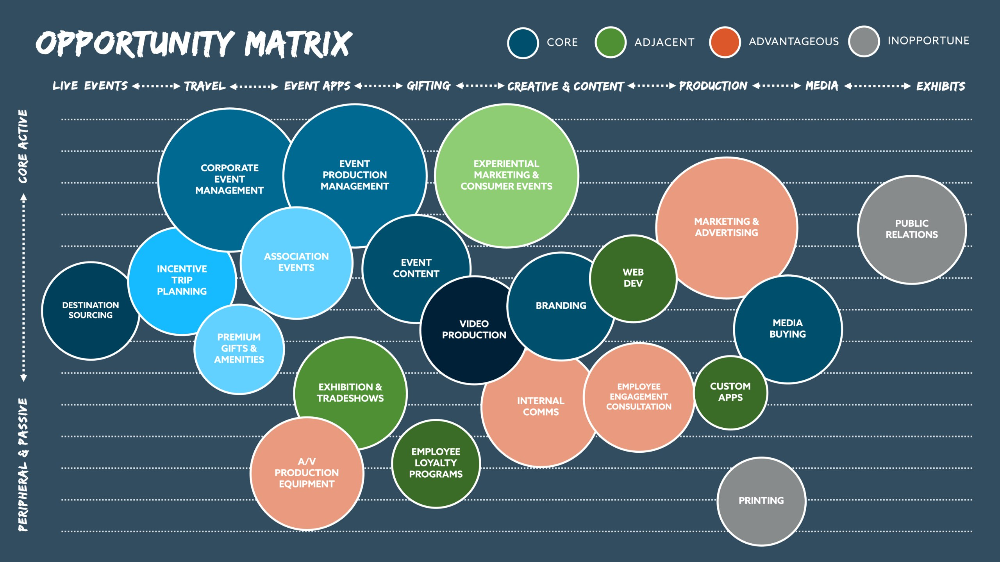

"Nobody sets out to build a movement. You set out to solve a problem that won't leave you alone."
🦌
"The elk is a symbol of His promise."
— Stan Bullis · Woodland Park, Colorado · 2001
I need to tell you something before we get into the frameworks.
This book is built on principles I believe are universal — applicable to anyone, in any industry, regardless of faith tradition or background. And I mean that. The 20/20/60 model works whether you find it in scripture or in behavioral economics. The ecosystem model works whether you're motivated by theology or pure strategy. None of what follows requires you to believe what I believe.
But I want to be honest with you about something. This book is faith-informed. It wouldn't be authentic if it weren't — faith is woven into the origin of everything here, from the elk on the hillside to the way we built the company to why we give the way we give. I'm not hiding that. And I'm not trying to convince you of anything.
What I hope — genuinely — is that it inspires you. Wherever you are, whatever you believe.
You'll notice I sometimes use words like the universe, or your future, or your highest and best self. Those aren't secular alternatives I'm reaching for. They're the way I talk about what I believe — about a God who is working toward you, about a destiny that is already in motion, about the version of yourself that is trying to emerge. I'm not being coy with the language. I'm being inclusive with it. You can receive those words through whatever lens you carry. They'll still be true.
I wrote this book because 25 years of building and breaking and rebuilding taught me something worth writing down. I offer it to you with open hands — not as a prescription, but as a testimony. Take what works. Leave what doesn't. But don't leave before you've given it a real look.
Now. The real origin. Not the polished version — the vulnerable one. Because it starts not with a business insight or a Harvard framework. It starts with a man at the bottom of his own story, reaching out to anything that might be listening.
✦
The Dirt Road in Woodland Park
My father worked for the CIA. I grew up overseas — multicultural, multilingual, always the new kid in a new country with a father whose job you couldn't explain. You learn fast, in that environment, how to read rooms. How to become whatever the moment requires. Smart here. Serious there. Funny, deferential, loud, quiet — whatever it took.
I got very good at that. Too good.
I started working in hotels at sixteen. By twenty-eight I was in live events. At twenty-nine I was president of a live events agency. All of it performative. A very different version of myself — not who I was created to be, but who the room seemed to need.
We grew that company from twelve million to two hundred and fifty million in eight years. Twenty-five percent growth, every year. They were my friends. And then one morning my CFO walked in and said seven words that changed everything:
"You're going to miss payroll by $650,000."
Someone had been misappropriating funds. We had dug a ten million dollar hole. And I — who could read a room like nobody's business, who could read an income statement just fine — had never learned to read a balance sheet. Didn't understand the mechanics of cash. And just like that: hero to zero. In front of everyone. The company I had poured everything into. The friends I had built it with. Gone.
I was out of a job. Entirely embarrassed. And genuinely terrified.
And like most people who are life-and-death scared, there's a tendency to reach out — to something bigger, to prayer, to whatever might be listening. That was my real introduction to faith. Not from strength or certainty. From desperation and loss and confusion. I opened a Bible for the first time as a grown man and the first thing that stopped me cold was Psalms 112. I didn't go looking for it. It found me. See Appendix →
That was the beginning of the spiritual journey. And somewhere in that process — super vulnerable, super open, more pliable than I had ever been — something strange started happening. There were moments where I felt like I was operating from the future. Like there was an open line. Like something was communicating with me.
I know how that sounds. I'm telling you anyway.
One day I was sitting at my computer and I felt a nudging: get on your motorcycle. So I did. I drove out of Parker, Colorado, just following prompts — left here, right there, turn here — for two hours, up through the mountains toward Woodland Park. No destination. Just following.
And then I ended up on a dirt road in the middle of nowhere.
I looked up. There was a giant bull elk standing in the road in front of me. Just standing there. Looking at me. The kind of moment where your first thought is: I'm going to die.
And then — by spirit, not by sound — I heard it:
"That's my promise. That's my promise."
I carefully navigated around him. Drove home. And began to study elk — how they cooperate with each other, why they're so revered, why they have never been bridled. Wild. Uncontainable. Moving together by instinct toward something greater than any one of them.
That elk became the logo. If you look at the Unbridled mark, you'll see a stylized elk. It's meant to be literal. A covenant symbol built into the brand — a daily reminder of where this began and who made the promise.
✦
Elk Meadow
Years later, we moved from Parker up to Evergreen. And every morning on the way to the office, I drove through an area called Elk Meadow.
Hundreds of times. Especially on the hard days — the confused days, the dark days, the days when the vision felt far away and the timeline felt impossible. I would be driving and suddenly I'd have to stop. A herd of elk, crossing the road. Just walking across, unhurried, completely unbothered by my schedule or my doubts.
Every single time, the same thing landed in my spirit:
"Though it linger, wait for it. It will certainly come and will not delay." — Habakkuk 2:3
Some people call it coincidence. Some call it divine. I call it what it was: a reminder. There's a plan. We wrote it down. Hold fast. Stay true. Endure. Be transformed by the encounter.
The elk weren't decoration. They were the promise, showing up again.
✦
Three Things I Know From That Road
I've had a long time to think about what happened on that dirt road in Woodland Park. Here's what I've landed on:
First: when you're most broken, you can typically hear better. The noise is gone. The performance is gone. The mask is off because there's nothing left to protect. And in that openness — that raw, embarrassing, terrifying openness — something gets through that couldn't get through before.
Second: there is a destiny for your life, and it's best if you cooperate. You don't have to invent it. You don't have to manufacture it. You just have to get quiet enough to hear it and brave enough to follow the prompts — even when the prompts take you down a dirt road you didn't plan to be on.
Third: it's all the Hero's Journey. Every bit of it. The fall from grace. The reaching out. The motorcycle ride into the unknown. The elk on the road. The return with something to give. Campbell mapped it in mythology. Habakkuk named it in prophecy. I lived it in Colorado. Same story. Different coordinates.
That's the introduction to this book. Not the business model. Not the frameworks. This. A man at the bottom of his own story, following a nudge he couldn't explain, finding a promise he didn't deserve, and spending the next twenty-five years trying to be worthy of it.
The rest is what I learned along the way.
✦
The Journey Is the Point
Joseph Campbell spent a lifetime mapping the Hero's Journey across every culture, every era, every mythology humanity has ever produced. And every single time, the structure is identical. Five moments. In order. Without exception.
I
The First Moment
The Moment of Decision
Something calls you. A vision. A conviction. A problem so obvious you can't believe nobody's solved it. You could ignore it — most people do. But you don't. That choice is where everything starts.
II
The Second Moment
The Moment of Bravery
You move before you're ready. You step into the unknown carrying more faith than evidence. Every person who has ever built anything real knows this feeling. It doesn't get easier. It just gets more familiar.
III
The Third Moment
The Moment of Endurance
This is the one nobody talks about enough. The vision lingers. The timeline isn't yours. Twenty-five years can feel like a very long time when you're in the middle of them. This is where most people quit — not because the vision was wrong, but because the wait is harder than they expected.
"Though it linger, wait for it. It will certainly come and will not delay." — Habakkuk 2:3 See Appendix →
IV
The Fourth Moment
The Moment of Transformation
The goal isn't to get through the journey intact. The goal is to be changed by it. We move from glory to glory — not in giant leaps, but in the slow work of experience, failure, recovery, and the people who walk alongside us through all of it. You cannot do this alone. You were never meant to. The transformation is a community project. It takes all kinds.
V
The Fifth Moment
The Moment of Victory
And it comes. Not always the way you imagined it. Often better. Always bigger than one person. The victory, when it arrives, belongs to everyone who endured — and it carries with it an obligation: make the tablet plain so the next herald can run.
✦
This book is about that journey.
Not my version of it. The version. The one embedded in the oldest stories we tell each other, the one confirmed in the most ancient wisdom traditions, and the one I've watched unfold — in real time, in real dollars, in real lives — across twenty-five years of building companies that were supposed to do good and do well.
They do. It works. And the road that gets you there is one of the most important things I know how to describe.
Let's Go
Doing Good by Doing Well
"The elk is still out there. The promise is still active. And the road — for you — is just beginning."
"The principles are ancient. The model is proven. And it works whether or not you share my faith."
↓
I want to start with a confession. This isn't really a business book.
Or rather — it's not only a business book. The model I'm going to share with you works. The numbers back it up. The companies prove it. But the reason I built it this way, the reason I've embedded it into every company I've ever started, goes deeper than strategy. It starts with a question I couldn't stop asking. And the answer changed everything.
The question was this: What would it look like if businesses did what governments are supposed to do — but did it far more efficiently, far more directly, and with far more genuine care for the actual human beings involved?
I didn't come up with that question in a boardroom. I came up with it on a hillside in Colorado, on a motorcycle ride that was supposed to be a vacation. I wasn't trying to build a business model. I was trying to hear something I'd been too busy to hear.
What I heard changed the trajectory of everything.
"The principles behind Doing Good by Doing Well are ancient. You'll find them in every great civilization's wisdom tradition, in behavioral economics, in the science of reciprocity. I'm not here to tell you what to believe. I'm here to tell you what works — and why it works whether or not you share my faith."
I'm going to be honest about where this came from, because I think the origin matters. It was a faith encounter — a moment of genuine clarity that I believe was given to me, not generated by me. I don't tell you that to convert you. I tell you that because I've found that the principles I discovered that day are just as true whether you find them in scripture, in behavioral economics, or in your grandmother's kitchen. The source is what works for me. The principle is what works — period. See Appendix →
So here it is, as plainly as I can say it: generosity returns generosity. Not as a philosophy. As a law. Time, talent, and treasure — give them, and they come back multiplied. Hold them tight, and they stagnate. This is not magic. It's not wishful thinking. It's the most consistently proven pattern I've observed across 25 years of building companies.
We called it Doing Good by Doing Well. And then we built an entire operating model around it.
✦
The Model
Most companies treat profit like a finish line. You cross it, you celebrate, you figure out what to do with what's left over. We built our companies the other way. Generosity isn't what happens after we make money. It's the first thing we do with it.
It's a simple split. We call it 20/20/60. Every dollar of profit gets divided three ways — and the order matters as much as the percentages.
20%
First Fruits
Goes directly to UnbridledACTS — our nonprofit — before anything else. Not what's left. The first.
20%
Preparedness
Retained and reinvested. Stored in good years to carry us through the lean ones. This is how you respond instead of react.
60%
People & Partners
Distributed to the people doing the work and the partners building alongside us. Competitive pay. Equity. Shared success.
Three numbers. But each one has roots that go deeper than a spreadsheet.
✦
The First Twenty
There's an ancient principle I kept coming back to. Give the first portion — not the remainder, not the surplus, but the first — back to something larger than yourself. Put it in the storehouse. Watch what happens.
I know that sounds like faith language. It is. But here's what I also know: it's the same principle that behavioral economists call reciprocity, that philanthropists call generosity compounding, that every wisdom tradition on the planet teaches in some form. You cannot out-give a generous posture. I have never seen it fail.
So we embedded it. Every company in the Unbridled ecosystem gives 20% of profits — first, before retention, before distribution — to UnbridledACTS, our 501(c)(3) nonprofit. Not as a marketing strategy. Not for the tax benefit. Because it's the right starting point, and because I've watched it change the culture of every organization that's tried it.
What does UnbridledACTS do with it? We don't run it through a government hierarchy. We don't send it through seventeen layers of administration before it reaches a human being. We put it directly into the hands of people who need it — locally, globally, and inside our own walls.
UnbridledACTS · 25 Years of Impact
Since we started, $10.5 million has been given — most of it in the last 15 years as the ecosystem grew. Not through government programs. Not through institutional channels. Direct, person-to-person, fast.
Some of it goes to organizations that house women escaping impossible situations. Some of it builds families in Costa Rica. Some of it covers rent for people in our own backyard in Fremont County. And some of it pays for counseling — because we believe that a team member who's doing the work of becoming a better version of themselves makes every customer interaction, every creative decision, every hard conversation better.
The Identity Fund covers 50% of counseling costs for every team member and their extended family. Not because it's a nice HR benefit. Because we genuinely believe that better people build better companies. It starts there, and the effect compounds through everything we do.
✦
The Second Twenty
This one is the one most business owners skip. And it's the one that saved us.
There's an old story about a Pharaoh who had a dream. Seven fat cows devoured by seven lean cows. Seven full heads of grain swallowed by seven thin ones. A young man named Joseph interpreted it: seven years of abundance, followed by seven years of famine. His advice was simple. Store one-fifth of the harvest in the good years, so you have something to give in the bad ones.
I read that story and thought: that's a balance sheet strategy. And I built it into ours.
For 20 years, we've been storing one-fifth of what we made. Not spending it. Not distributing it. Storing it. Building real preparedness — not just a line item on a spreadsheet.
And then 2020 happened.
The Proof · March 2020
We are a live events company. When COVID hit and the world shut down, we lost $50 million of $100 million in revenue — half the business, almost overnight. Events — every single one — canceled, postponed, or evaporated.
I watched our industry and competitors go into panic mode. Layoffs. Fire sales. Frantic pivots. The ones who had been spending everything they made had nothing to give. They had to react.
We didn't have to react. We got to respond.
That distinction — react versus respond — is the entire difference between a company that survives a crisis and one that compounds through it. Reacting comes from scarcity. Responding comes from strength. Twenty years of storing one-fifth put us in a position to protect our people, honor our commitments, and come out of the pandemic with our culture and our team intact. We kept 80% of our workforce. Not as a PR move. Because we could. Because we'd stored up for exactly this moment.
But here's the part of the story that still stops me.
That same week — the week we lost half our business — a few of us sat on the front porch and pondered something. The principle we kept coming back to was this: the best way to navigate famine is to sow into it. Because the soil is most fertile when everyone else has stopped planting.
So we launched a $200,000 benevolence campaign for workers across our industry. People who had nothing coming in. People whose livelihoods had evaporated in the same week ours had. We sowed out of our storehouse — not because we had excess, but because we believed generosity was the remedy. Not a strategy. A remedy.
What followed was one of the greatest seasons of growth and prosperity in Unbridled's history.
I can't prove causation. But I know what I watched happen. The fat years stored up. The lean years came. We planted instead of hoarded. And the harvest that followed was unlike anything we'd seen before.
Joseph's principle held. And then some.
The second 20% isn't conservative caution. It's the most aggressive long-term play you can make. It turns crisis from a threat into a test you've already prepared for.
✦
The Sixty
There's a principle that's stayed with me since the beginning. It goes something like this: you've been given the ability to produce wealth. Don't forget that. And don't keep it to yourself.
Deuteronomy 8:18 · NIV
"But remember the LORD your God, for it is he who gives you the ability to produce wealth, and so confirms his covenant."
Where the 60% comes from
This is the verse that anchored the model. Not a motivational principle — a covenant reminder. The ability to produce wealth isn't self-generated. It's given. Which means it carries an obligation: don't hoard it, don't forget where it came from, and build in a way that honors the source. The 60% isn't generosity as strategy. It's stewardship as theology.
The 60% isn't the company's cut. It's not what the founders keep. It's what flows to the people doing the work and the partners building alongside us — competitive compensation, meaningful equity, shared upside. The people who make the thing go deserve to benefit from what the thing produces.
And here's what I've learned from 25 years of doing it: when people feel the direct connection between their contribution and their compensation, they stop working for a paycheck and start building something. The energy in the room changes. The quality of decisions changes. The loyalty that's impossible to manufacture — that shows up on its own.
There's also a spiritual dimension to this that I'll just name plainly. Wealth isn't bad. It carries responsibility. The more faithfully you steward what you've been given, the more capacity you earn to steward even more. This is not prosperity gospel — it's stewardship theology, and it maps almost perfectly onto what behavioral economists call intrinsic motivation and compounding social capital.
You give it. You store it. You share it. And then you do it again — at a bigger scale.
✦
The Part That Surprised Me
Here's the thing I didn't fully anticipate when we started building this way. The model doesn't just produce generosity. It produces performance.
I expected the philanthropy side to feel like a cost. Like something we'd have to fight to protect when times got lean. What I didn't expect was how much it changed the people inside the company — what they were willing to give, how they showed up, what they were building toward.
When your team knows that a portion of every dollar they help generate goes directly to someone who needs it — not to a corporate social responsibility PR campaign, but to an actual human being in a real and difficult situation — something shifts. Work becomes about more than work. The mission becomes something you carry home.
And the results followed. Not despite the generosity. Because of it.
I know that sounds too good to be true. So let me point you at the companies that have proved it independent of anything I've built.
Patagonia
Yvon Chouinard gave the entire company away to a nonprofit trust dedicated to the environment. Revenue went up. The brand got stronger. It turns out people want to buy from companies that mean what they say.
REI
REI closes on Black Friday — the single biggest retail day of the year — and sends employees outside instead. Revenue per store is among the highest in outdoor retail. Doing good didn't cost them. It compounded.
Costco
Pays above-market wages, keeps prices low, and runs the lowest employee turnover in retail. Their logic: treat people well, they stay, they care, customers feel it. The math works out. Every time.
Chick-fil-A
Closed on Sundays — one-seventh of every possible revenue day — and generates more revenue per unit than any other fast food chain in America. The constraint became a statement. The statement became a brand.
In-N-Out Burger
Family-owned for 75 years. Never franchised. Never went public. Pays some of the highest wages in fast food, prints scripture on the packaging, and maintains quality standards so stubborn they've turned down expansion opportunities most companies would kill for. The result: a cult following that no marketing budget could manufacture, and a company that proves you can build something great without ever selling your soul — or your equity — to do it.
These aren't flukes. These aren't feel-good stories from companies that could afford to be generous. These are the clearest examples I know of what happens when a business stops treating purpose as a PR strategy and starts treating it as an operating system.
Doing good isn't the cost of doing well. It's the engine of it.
✦
What This Actually Asks of You
I want to be straight with you. This model isn't complicated. But it does ask something of you that most business frameworks don't.
It asks you to give first — before you know what the year will look like, before the numbers are certain, before the "right time" arrives. The right time never arrives. You decide it's the right time, and then it becomes the right time.
It asks you to store what you could spend — in the good years, when the temptation to distribute everything is strongest. The discipline of restraint in abundance is the hardest financial discipline I know. And the most important.
And it asks you to share the upside with the people who created it — not after you've taken care of everything else, but as a core structural commitment that you build into the company from day one.
None of this is natural. Left to our own instincts, most of us spend what we make, distribute as little as we can get away with, and give to charity when there's something left over. The 20/20/60 model runs directly against every short-term instinct a founder has.
Which is exactly why it works. Because everyone else is following the instinct.
"Doing good by doing well isn't a values statement. It's a business strategy. And over 25 years of building it, I have never once wished I'd been less generous."
— Stan Bullis, Founder · Unbridled
The companies in this book — all 32 of them across four verticals — are the proof of concept. They don't all look the same. They don't serve the same markets or operate the same way. But they all share the same foundation. And that foundation is what makes everything else in this book possible.
We'll get to all of it. The ecosystem model. The culture. The journeys — yours and your client's. The kind of leader this model asks you to become.
But it starts here. It starts with a question about what business is actually for, and a decision about who gets to benefit from what you build.
Start there. The rest follows.
Reflection · Chapter One
Three questions worth sitting with.
1
If your company gave away the first 20% of every dollar of profit — before retention, before distribution, before you knew what the year would look like — what would actually change? And what does your answer tell you about what you believe business is for?There's no right answer. But there's a revealing one.
2
When COVID hit — or the last real crisis hit — did your company react or respond? What was the difference, and what made it so?If you reacted: what would you need to build today so the next crisis is different?
3
Name one person on your team whose financial life would look different if they shared in the real upside of what the company produces. What's the story you're telling yourself about why that hasn't happened yet?Not a judgment. A mirror.
Have you ever felt like there was something in your future that was already working its way toward you?
↓ keep reading
Most people spend their whole lives trying to build their future. What if the future was already trying to build them?
There is a question worth sitting with before you turn another page. Not a trick question, not a philosophical detour — a real one. Have you ever felt like something was working toward you? A sense that a certain person, a certain opportunity, a certain moment was always meant to find you — that your whole life had been, without you knowing it, a preparation?
Some people call it the law of attraction. Some call it providence. Some call it luck. Otto Scharmer, a senior lecturer at MIT and the founder of the Presencing Institute, spent decades building a research framework around it. He calls it Theory U. And the question at the center of his work — the one etched at the bottom of his U-shaped model — is deceptively simple: Who is my self? What is my work?
That symbiotic relationship between being and doing. Between who you are and what you're for. Scharmer argues that the people who cooperate most fully with their future are the ones who learn to open — open mind, open heart, open will — and let go of the old narratives that keep pulling them backward.
"What we pay attention to, and how we pay attention, is the key to what we create. Becoming aware of our blind spots opens our minds, our hearts, our wills to the process that connects us with our best future possibility."
Otto Scharmer, Theory U — MIT Presencing Institute
Jeremiah said it differently, thousands of years earlier: "For I know the plans I have for you — plans to prosper you and not to harm you, plans to give you a hope and a future." Secular and sacred. Same truth. Two different languages pointing at the same mountain.
Winston Churchill said it differently still. In 1940, on the night he became Prime Minister — the night he stepped into perhaps the most consequential leadership role of the twentieth century — he wrote: "I felt as if I was walking with destiny, and that all my past life had been but a preparation for this hour and for this trial."
Churchill had been navigating that destiny for decades before the moment arrived. He'd been sidelined, ridiculed, wrong about things, right about things no one wanted to hear. His past wasn't a highlight reel. It was training. And when the moment came, he was ready — not because he'd planned it perfectly, but because he hadn't stopped moving toward it.
That's the idea we want to sit with in this section. Not destiny as a mystical concept you either believe in or you don't. Destiny as a leadership practice. A way of paying attention. A commitment to stay tuned in — to the people in your path, to the signals in your field, to the future that is already working its way toward you.
The Core Idea
We run across people every day who may change our future or co-create in our destiny.
We need to be tuned in and aware of what may be coming.
And the best way to do that is to let go of the old narratives holding us back.
The stories that follow aren't abstract. They happened. They are the evidence. Three stories, three scales — one about a company, one about a building, one about a phone call on a Saturday — and together they make the same case: the future is always cooperating with you. The question is whether you're cooperating back.
Story One
The First Story
You Can't Outsource Your Identity
When Unbridled launched in 2001, the plan was on paper. Habakkuk said write the vision down — so we did. See Appendix → But having a plan doesn't mean you're ready to live it. And the truth is, in those early days, fear was louder than faith.
Imposter syndrome runs rampant in the early chapters of any entrepreneur's story. You know what you're supposed to build. You're less sure you're the person who can build it. And so, in what seemed like a reasonable move, I sold 51% of the company to a well-established partner firm back east. Good people. Strong company. It made sense on paper.
What I learned — slowly, painfully — is this: you can't outsource your identity. Not even a little. Not even to good people. The piece of you that knows what you're called to do, who you're called to become — that piece is exclusively yours to steward. Hand it to someone else, and you don't just give up control. You subordinate the very thing you were asked to bring.
The first ten years were hard. For-profit struggling, nonprofit established but operating on the principle that twenty percent of zero is still zero. The partnership grew increasingly tenuous. Then 2009 arrived — the real estate crisis — and with it, the moment of reckoning. I bought back the 51% for more than it was worth. It was expensive. And it was the best money I ever spent, because what came back wasn't just equity in a company. It was the restoration of an identity.
Here is what I didn't fully understand at the time: even while I was subverting my calling in business, the future was still cooperating with me.
On our honeymoon, the phone rang. Anonymous call. A family in Texas had heard about our nonprofit and wanted to donate their land — a property that had been home to eighty foster kids and their families. Land about the restoration of people. They offered it for a dollar.
My wife Cindy and I moved in. For the next ten years, we lived in community. We walked with people coming out of severe abuse situations. We made covenants. We stayed through thick and thin. People lived with us for years at a time.
It didn't look like destiny. It looked like a detour.
But it was in that group home — not in a boardroom, not at a conference, not in a strategic planning session — that the Unbridled culture was born. Character. Change. Credibility. Community. The four cornerstones didn't come from a consultant or a workshop. They came from watching broken people become whole ones. From learning, up close and personal, that identity opens opportunity. That we are created to lead, create, expand, and protect.
Even if you're not cooperating with your future, your future is still cooperating with you — to prepare you, and to bring you into the fullness of what you were created for. You just have to stay aware. Let go of the old patterns. And cooperate back.
The rerouting wasn't punishment. It was preparation. The future — God, the universe, call it what you will — is like the ultimate Siri. It will keep rerouting you until you actually get where you're supposed to go. The question is how long you want to argue with the directions.
Story Two
The Second Story
The Future Reaches Back
One afternoon at the group home, a young woman walked in with her mother. Her name was Jesie. And Cindy, who has a gift for seeing things other people miss, looked at her and said — out of nowhere, with no preamble — "You're about to get a new song."
Jesie broke down crying. She'd been struggling, searching, unsure of where she was headed. Those six words hit something deep. She couldn't have explained why, but she knew they were true.
Jesie later became my personal assistant. And it was in working together — first on an office expansion into a gutted warehouse in LoDo near Coors Field, then on a second group home property — that I began to see her gift clearly. Jesie had a genius for intentionally crafted spaces. For understanding that environments don't just hold people — they shape them.
That LoDo warehouse taught us something we've never forgotten. We'd been operating out of a bank building. Corporate. Conventional. And people — clients and team members alike — treated us that way. When we moved into the renovated warehouse, open and creative and full of intention, something shifted. People started seeing us differently. We started seeing ourselves differently. The space gave us permission to become what we already were.
Environments have a profound effect on outcome. The places we inhabit either unlock us or limit us.
By 2015, we'd bought the company back and were growing again. We needed more space. So we toured everything we could find. I told the real estate agent to show us everything — then walked into the last building of the day and immediately told Jesie it was a no.
The Sheedy Mansion. Built in 1892 by Dennis Sheedy — Irish immigrant, entrepreneur, president of the Colorado National Bank, owner of the silver smelter. Converted to a music and art conservatory in 1924. Largely neglected and subdivided from 1974 onward. By the time we saw it, it had a creepy vibe. Chopped-up rooms, dropped ceilings, the accumulated neglect of decades.
We walked in. We got separated somewhere on the tour. I came out the other side confident in my verdict: not a chance. Jesie was standing in the parking lot, crying. Not just a little. Really crying.
"I don't know, Stan," she said. "There's something about this place."
I spent the next two weeks dreaming about it anyway. Running numbers. Calling it crazy. Running more numbers. And then we acquired it — well below market value — and set out to restore it.
One of our team members went to the Denver Public Library and found two things: the original Mylar architectural drawings from 1892, and Dennis Sheedy's autobiography.
We opened that autobiography and felt the floor shift.
Sheedy wrote about seeing the captains of industry gathering in that building. He wrote about work ethic, entrepreneurship, the dignity of labor, the obligation of success. And his words mapped — almost verbatim — onto our cornerstones and ways of being. He'd been writing our story one hundred years before we arrived to live it.
All of a sudden I felt like the future had reached back and grabbed me. Like a door had opened into a dimension I didn't know was there.
We hung a plaque outside every room: the room's name, a quote from Sheedy's autobiography, and the corresponding Unbridled value. A nineteenth-century entrepreneur and a twenty-first-century company, speaking the same language across a century of silence.
Then I turned to Jesie — neither of us having any background in construction, any degrees in historic preservation, any rational basis for what I was about to say — and asked: "Do you want to start a construction company?"
We launched Unbridled Contractors on three things: Jesie's gift for intentional spaces, Dave Sandy's expertise in earthwork, and an entrepreneur's willingness to start something he had no business starting. Our first job was the Grant Street Mansion in Denver. Three people. Two and a half years.
In 2017, we won Best Historic Preservation in Colorado.
That award ignited something. It opened an entire portfolio of historic preservation work — fourteen buildings between Denver and Cañon City, in various stages of restoration. And ultimately, it set in motion the restoration of Main Street in Cañon City. But that's a story for Section Four.
Jesie cried in a parking lot over a building I'd already dismissed. She was more tuned in than I was. That's the lesson. Destiny doesn't always announce itself to the person in charge. Sometimes it announces itself to the person paying attention.
Story Three
The Third Story
The Cover Job
It was a Saturday. The phone rang — unknown number. I looked at Cindy. She looked at me. "Go ahead," she said. We were still at the community home.
The voice on the other end was Jonathan. He'd been trying to reach me for eighteen months. He wanted a job. He also had a live event lead that needed resources. Could we meet?
We sat down at a restaurant. Jonathan explained that he'd been following what we were building — the business model, the culture, the doing good by doing well philosophy. He'd been watching us live in community. He said he wanted to be in our ecosystem.
So I turned it into an interview. We talked for a couple of hours. I couldn't see exactly where Jonathan was going — couldn't visualize the specific future he was moving toward — but I knew something innate was in him. I knew he needed to be in our world. We never actually got around to discussing the piece of business he'd brought.
At the end, I asked him the question I've asked a lot of strong young people over the years — the one that makes the room go quiet: "What's going to prevent you from working here for a couple of years and then leaving to start your own thing?"
Ten seconds of silence. Maybe longer. I could see him taking a genuine inventory.
"Honestly, Stan," he said. "I probably will."
And out of my mouth, before I'd had time to think about it:
The Response That Changed Everything
"Good. Then it's my job to give you so much opportunity you'll never want to leave."
We gave Jonathan a cover job. Marketing Program Manager. He never really managed a marketing program. That's not what it was for. We were holding him loosely — giving him a place in the ecosystem, watching where his gravitational pull took him, waiting for identity to reveal itself.
Turns out Jonathan is a financial genius.
One day he walked into my office: "Stan, I don't have anything to do."
"I can't help you with that, Jonathan," I said. "Go find something to do."
He went and found something to do. He started researching historic tax credits on the Grant Street Mansion — which we'd been restoring without any knowledge of the credit system. Thirty percent in state tax credits, twenty percent in federal income tax credits, available to anyone who rehabilitated a historic property using approved historical methods.
We hadn't pre-applied. We hadn't followed the process. But Jonathan contacted the tax credit office anyway. He built a relationship. He got them to agree to an exception review — because the property was considered significant to Denver's Capitol Hill landscape.
They came to look. And what they found was that we had, completely by accident, rebuilt the mansion using the precise methods and materials the program required — because we'd been trying to restore it faithfully to the original, not because we knew the rules.
We were approved. The tax credits generated over $900,000.
That $900,000 bought the next building. That building bought the next one. Fourteen historic buildings later, an entire real estate portfolio exists because a bored young man in a cover job decided to go find something to do.
And Jonathan wasn't done. He took the same financial instincts to Infinite Banking — an overfunded life insurance strategy that creates cash value, uninterrupted compounding, and full liquidity while the policy is active. A death benefit that activates the proverb: a good man leaves an inheritance to his children's children.
What started as a chance meeting became a job interview. The interview became a cover job. The cover job became a real estate portfolio. The portfolio became a wealth management company — teaching businesses how to bank on themselves.
All of it from: I can't help you with that, Jonathan. Go find something to do.
Story Four
The Fourth Story
Thirty Years in the Making
In the mid-1990s, two competitors sat down together on behalf of a shared client. Johnson & Johnson had a global live events portfolio, and rather than fight over it, Andrew — the managing director of an international event company — and I agreed to collaborate. Same rates. Customer picks whoever can serve them best for each project. One table. Two competitors. Total focus on the client.
It was unusual then. It's still unusual now. But it worked. And it built something rarer than a contract — it built a friendship forged in shared values.
Time passed. Andrew's company was acquired. We went our separate ways. Occasionally a name surfaces in an industry you never quite left, and you wonder — but you don't reach out. Life keeps moving.
About fifteen years ago, I was standing outside a client's office in Shoreditch, London. And something dropped in my spirit. Not a plan, not a strategy — more like a sentence landing on the inside: Someday we're going to have an office here. I said it out loud. Probably seemed strange to whoever was standing next to me. But I knew it was true.
Years went by. The sense never left. And finally, about a year ago, we sat down for a strategic planning session and did what we hadn't done before: we wrote it down. Officially, formally, on paper. We were going to open in London.
That act matters. Writing it down isn't just documentation. It's cooperation. It's the moment you stop carrying an idea in your head and start building a runway for it in the world.
Within two weeks of writing it down, Andrew ran into Amy — one of our salespeople. He told her he was now the managing director of a company that was looking to merge or be acquired. Amy brought it back to us.
Within six months, we had completed the acquisition of Orange Door — a UK event company carrying the same DNA, the same culture, the same values we'd been building for twenty-five years. Two companies with thirty years of parallel history, converging in six months, because we finally wrote down what the future had been holding for us all along.
There are people in your path who share a same destiny — or an adjacent one. And as a company, if we can embody the conviction that we are collaborating in each other's destiny, that changes everything.
The future had been cooperating with us for thirty years. The question was simply when we would start cooperating back.
The Point of All of It
We run across people every day who may change our future or co-create in our destiny. We need to be tuned in and aware of what may be coming. And the best way to do that is to let go of the old narratives holding us back.
This is why Theory U matters for leaders. The three internal voices that block the descent — the Voice of Judgment, the Voice of Cynicism, the Voice of Fear — aren't philosophical abstractions. They are the exact mechanisms that make you hang up on Jonathan's call. That make you walk confidently out of the Sheedy Mansion while Jesie is crying in the parking lot. That make you carry a London dream for fifteen years without writing it down.
Letting go is not passive. It is the most demanding thing a leader can do. It means releasing the version of the story you've been protecting — about who you are, about what's possible, about whether you're the right person for this — and staying open to what's actually coming.
Destiny isn't a destination you navigate to. It's a current that's already moving. Your job is to stop blocking it.
How Unbridled Builds This In
This isn't just a philosophy. It's operational. For years, every hire at Unbridled went through a conversation designed not to evaluate a résumé, but to glimpse a future. The question wasn't what can you do? The question was who are you becoming — and is our path and yours meant to run together for a while?
Cover jobs. Held loosely. Watching for gravitational pull. Giving people room to find their own contribution rather than fitting them into a predetermined box. This is how you build an organization that cooperates with destiny at scale — not just for the founder, but for every person who walks through the door.
Jonathan walked in with a live event lead. He stayed because we gave him enough room to discover he was actually a financial architect. Jesie walked into a group home on an ordinary afternoon and ended up founding a construction company and winning Best Historic Preservation. Amy went to work one morning and, without knowing it, closed a thirty-year loop.
Every one of them was already in motion toward something. The organization just had to be tuned in enough to see it — and humble enough to get out of the way.
For Reflection
Where in your life or organization are you downloading old patterns instead of sensing what's coming? What would it look like to let go of one of those narratives this week?
Who is the Jesie in your ecosystem — someone whose gift you may be underestimating because it doesn't match a job description or a credential? What would it mean to hold them loosely and watch where they go?
Is there a plan that's been living in your head — a London office, a building, a conversation you've been putting off — that the future has been waiting for you to write down?
Destiny tells you the future is working toward you. Adjacent Opportunities is how you learn to recognize it when it shows up — in a person, a building, a moment that looked like coincidence.
Chapter 2
Adjacent Opportunities
3
Section One · A New Kind of Company
Adjacent Opportunities
You don't find the next great company. You cultivate the people — and the company finds you.
Read on
Here's a question I've been sitting with for a long time. What if a company — or a group of companies — was genuinely good at harnessing the future potential of an individual? What if it was actually open to engaging in who a person is becoming, not just who they are today? What if it tried to understand their purpose — the thing destiny has been pulling them toward, sometimes for decades before they could name it?
That's what we're attempting to do. Our mission at Unbridled is to unbridle human purpose and potential. To create a place where people are free to bring their full selves to work — not a filtered version, not a performance of who they think they're supposed to be.
"When an individual is seen, trusted, and empowered, something amazing is released. Their sense of ownership deepens. Work becomes more than a task — it becomes an expression of who they are."
In that environment, people don't just perform better. They come alive. And when a person comes alive, they elevate everything and everyone around them.
When you build a company that actually does this — not as a slogan but as a daily practice — something unexpected starts to happen. The next company practically introduces itself. Not through a spreadsheet or a market study. Through a person. Their identity, meeting the right moment, in a culture that's been watching for exactly that.
That's what this chapter is about. We call it adjacent opportunity. And it starts with a simple definition of success.
✦
The Definition of Success
People ask me all the time how many companies is enough. When are you going to stop? When are you going to retire? I understand why they ask. Forty companies sounds like a lot. So does a hundred. So does the 150 a prophetic voice spoke over me in a church service a few years back — a man who didn't know me, who paused at the end of the service and said, "I see 150 businesses."
I held that loosely. Then I started researching for this book and found that Sir Richard Branson has built over 400 companies under the Virgin name. So maybe the magic isn't in the number.
Here's how I actually think about it: if each of these businesses is doing good, then the real question is how much good is enough. And once you ask it that way, the answer becomes obvious. There's never enough good — because good is connected to love, and love always prevails.
"How much good is enough? There's never enough — because good is connected to love, and love always prevails."
So what's success, then? Here's the definition I keep coming back to:
Success is when destiny meets opportunity — the relationship between identity and doing.
Identity is who you are. Opportunity is what shows up. Adjacent opportunity is what happens when you've built a culture tuned in to both — and you refuse to let one get ahead of the other.
✦
Know Who God Has Put in Your Path
Before you can see the opportunity, you have to see the person.
This takes more discipline than it sounds. Most organizations are wired to see roles, not people. They hire for what you've done, slot you into a box, and measure you by the box's output. We try to do something different — and harder. We try to understand three things about every person in our path:
1
Their Identity
Not their job title. Not their résumé. Who they actually are — their values, their character, the thing they'd do even if nobody was paying them. What some call a calling. What others call a destiny fingerprint.
2
Their Values
What they protect. What they won't compromise under pressure. The line they won't cross, even when crossing it would be easier. Values are the load-bearing walls of character.
3
Their Purpose
What they're here to build. Not this week, not in this role — in their lifetime. The contribution that's uniquely theirs to make. The shape of the good they were designed to do.
Leadership's primary responsibility is to connect what a person does with who a person is. That gets complicated when someone wants to switch companies, change roles entirely, start something new, or prioritize family in a way that doesn't fit the current org chart. Holding team members loosely enough to see what's coming — that's an art form. It takes years to build that kind of culture. But the payoff is extraordinary.
✦
The Adjacent Opportunity Model
Knowing the person is the foundation. But adjacent opportunity is also a process — a disciplined practice of staying aware of what's emerging. We call it the Opportunity Matrix, and every company in our ecosystem builds one.
The Opportunity Matrix — Live Events Ecosystem

Core (blue) = what you already own. Adjacent (green) = the natural next move. Advantageous (orange) = worth watching. Inopportune (gray) = recognize it and walk away. The matrix is built once and updated continuously — because the ecosystem is always moving.
We do this so we stay tuned in to what may be coming — and to the services we're currently buying outside our core that we could bring inside. When a new company spins off, it attracts new talent and new leadership, expands the ecosystem's equity and distribution model, and stays nimble, close to the work, and creative. Smaller companies aren't a compromise. They're the point.
The 7 Steps to Adjacent Opportunity
1
Look at Your Own Ecosystem First
What services are you currently buying outside your core that you could bring inside? Your balance sheet and P&L contain the map. The opportunity is often hiding in a vendor relationship.
2
Look for Circumstantial Evidence
Is the market sending signals? A customer saying "I can't find anyone to do this" is circumstantial evidence. A consistent gap in your capability that slows your best work is circumstantial evidence. Pay attention to what's missing.
3
Align the Opportunity with a Person
This is the most critical step. We find an opportunity and we hold it — until we find the right person. Because in our ecosystem, we always prioritize people over positions. Sometimes a person creates the opportunity. Sometimes the opportunity waits for the person. Either way, the two need to meet.
4
Honestly Evaluate Your Ability to Perform
Destiny can carry you further than skill alone — we launched a historic preservation company without ever having done it before, and it became award-winning. But knowledge and expertise still matter. Don't confuse faith with recklessness.
5
Build the P&L and Verify Cash Flow
Great businesses don't die from bad ideas. They die from running out of cash. Our model: if we can derive 50% of revenue from internal projects within the ecosystem, we can go find the remaining 50% externally — and reach profitability relatively quickly. Run the math before you run toward the vision.
6
Step Toward It
Most ideas fail not because they were wrong, but because they never got off the ground. Cooperation is required. Write it down. File the company. Build the site. Create the action plan. The OrangeDoor story began with an intuition eight years before it became a global acquisition — but it didn't move until someone put it on paper and began actively cooperating with it.
7
Wait for a Response
This is the counterintuitive part. You step forward — and then you wait. Not passively. You're engaged, watching, cooperating with a future that's already been placed inside you. The response might be a new client, a breakthrough conversation, a piece of business that arrives from an unexpected direction. You'll know it when it comes.
✦
The 4 Go / No-Go Fundamentals
The seven steps tell you how to move toward an adjacent opportunity. These four tests tell you whether you should go at all. All four have to pass. One fail is a no.
The Go / No-Go Fundamentals
1
Has to Sit Right in Your SpiritNot fear. Not hype. Settled peace — the kind that says "I could do this forever, even if no one was paying me." When something is right, there's a passion that's difficult to set down. If you can't find that feeling, wait. Don't manufacture momentum.
2
Validated by People Who Really Know YouNot acquaintances. Not a committee. The people who will tell you you're wrong when you're wrong — and who say, "That really sounds like you. I can see how that's in your destiny." If the people who know you best don't see it, pause and listen to why.
3
Can't Violate Your Core ValuesFor us, that means Character, Change, Credibility, Community, Generosity — and Doing Good by Doing Well, which is written into the bylaws of every company we've ever started. If a new venture can't carry the culture, it's not adjacent. It's a detour. Whatever your equivalent is — the values you've built your life on — protect them. A hard no is still a no.
4
Circumstantial EvidenceThings should be breaking open before you break ground. Doors opening. The right people appearing at the right time. Timing that you couldn't have engineered. There's a relationship between you cooperating with the opportunity and the opportunity cooperating with you. Watch for it.
✦
A Place as an Adjacent Opportunity — Cañon City
Every example I've given so far has involved a person meeting an opportunity. But sometimes the opportunity is a place.
By 2015, we were well over a dozen companies. We were beginning to realize we were living examples of the Parable of the Talents — that good stewardship, compounded, creates more responsibility. We were growing. And then we encountered an upgraded version of that parable: the Parable of the Minas, where faithful stewardship doesn't just produce more responsibility. It produces influence over cities. See Appendix →
That stopped us cold. What would it look like if a company — or an ecosystem of companies — actually influenced a city?
Around this same time, Jonathan's work with infinite banking had unlocked something important about the flow of money. We'd been storing 20% in every company for twenty-five years, and we'd begun investing that in infinite banking — creating unlimited compounding, positive arbitrage, and massive death benefits. We learned that the flow of money is a very active catalyst. Money that keeps moving, kept wisely, creates exponential capacity to do good. We started to believe we could make a bold statement: hundreds of companies, lasting hundreds of years, all doing good by doing well.
We began to add something to our Opportunity Matrix: historic preservation on Main Street America. Could we build a model that gave hope — and economic lift — to rural towns? We set our mission as simple as we could make it: give hope through hospitality on Main Street.
The Cañon City Story
$88,000. $20 Million. One Dana Crawford Award.
We had just completed our second historic preservation project in Denver — both award-winning. I remember walking through the Bosworth House on 14th and Josephine and telling our construction team, "You better figure out what's next, because we don't have another project." That was Jesie's activating moment. She started looking.
What she found: Hotel St. Cloud, going to auction, a must-sell. I had a hotel background — worked for Marriott first, then Ritz-Carlton, and I'd always wondered what it would be like to own one someday. The idea of combining hospitality, historic preservation, and a boutique hotel was more than interesting. It felt like exactly what we'd been preparing for without knowing it.
Jonathan showed up at the auction. We purchased the hotel for $88,000.
What came next humbled us. The initial budget was $8.8 million. The final cost was $20 million — because Hotel St. Cloud had environmental issues, lead paint, three rounds of asbestos mitigation, structural failures, and a foundation built on a riverbed. The building had fallen eight inches and needed to be lifted and re-tied to new infrastructure. We ran out of money three times.
We opened in July of 2025. Just recently, we received the Dana Crawford Award for historic preservation — our third consecutive. When we arrived in Cañon City eight years ago, Main Street vacancy was estimated as high as 40%. The average hospitality worker earned about $22,000 a year. We have since acquired nine additional buildings on Main Street. Today, vacancy hovers around 10%. Main Street is a destination — for events, travelers, tourists, and shoppers. Hospitality workers have seen high double-digit growth in compensation.
We're building a prototype. Not just for one city. For Main Streets everywhere.
✦
A Person as an Adjacent Opportunity — Justin
Three years into our time in Cañon City, we met Justin.
He was a tenant in one of our buildings — a former youth pastor doing IT work, building websites and small applications for people around town. Quiet, thoughtful, deeply kind. Justin and his wife Jenny are pillars in Cañon City. Some of the most generous people I've ever known.
I'll be honest: this is a little emotional for me. My son moved to Cañon City, and Justin and Jenny took him under their wings. Loved on him. Became mentors who are still key in his life today. I carry a profound debt of gratitude for who they are and what they've done for our family.
Justin's purpose, as we've come to understand it over years of working together: to creatively build and connect systems, people, and ideas in ways that help others flourish. To turn complexity into clarity, possibility, and reality.
That's who he was when he was a youth pastor. That's who he was when he was building websites in a small office on Main Street. We didn't put that in him. We just had the privilege of recognizing it — and eventually creating space for it.
We got to know each other over coffee. Months turned into years. We'd dream about things, talk through ideas, build a friendship. No recruitment pitch. No formal process. That's what we mean when we say management is more about relational equity than control.
A few years in, the opportunity opened at Unbridled. Justin joined. What followed was an award-winning career — but that's almost beside the point.
The point is what happened next.
Jonathan started asking: where do you find the people who do this AI work? The context engineers, the prompt engineers? We learned about a meetup happening in Denver. A group of us went — Jonathan, Justin, Jordan, my son. We sat in a room and watched people coding and building and presenting. And I kept noticing that Justin and Jordan kept quietly nodding. Yeah, I know how to do that. Yeah, I'm aware of that. Yeah, I can do that.
But it was more than competence. There was a spark. Something that was obviously inside Justin — his ability to make complex things simple, to help people flourish — was present in everything he was watching. The youth pastor. The web developer. The AI builder. Same identity, different containers.
Stan's Morning Analogy — On AI and Ownership
"AI is like a car. If you're a casual user — just talking to ChatGPT or Claude — you're a passenger. The car gets you to a destination. But if you're operating with AI, you're driving. You decide where you're going. You decide what's on the radio. When to stop, when to accelerate. The control and the end destination are entirely yours. That's the difference between using AI and building with it."
We built Unbridled.ai. A done-for-you AI operations company. This book — the one you're reading — is a direct result of Justin building me my own AI team, managed by MC. I've been using it for about two weeks. Here's what I can tell you so far:
40%
Increase in Productivity
60%
Increase in Ideation & Activation
∞
In Hope
Unbridled.ai wasn't anywhere on the Opportunity Matrix. It emerged from identity — Justin's, Jonathan's, Jordan's. Their identity created the awareness. The awareness created the company. And the company is now doing good by doing well.
"We find an opportunity and we hold it — until we find a person. Because in our ecosystem, we always prioritize people over positions."
One more thing. The process itself needs to be held loosely. We had a model, seven steps, four tests, a matrix. And Unbridled.ai bypassed most of it — because it emerged from people, not planning. Process is a tool. It's not the master. Hold it loosely too, or it becomes a ceiling on your own ideation.
✦
What Comes Next
Seeing the opportunity is one thing. Stepping into it is another. Every adjacent opportunity — every new company, every new role, every new chapter of a person's story — still requires a journey. A real one.
There's a moment of decision. A moment of bravery. A moment of endurance that tests everything you thought you knew about yourself. And eventually, if you stay in it, a moment of victory.
Most people never reach that last moment — not because the opportunity was wrong, but because no one stayed with them through the hard middle.
That's what we're trying to fix. Which is what the next chapter is about.
Reflection
"Name the last person you encountered who you now believe wasn't accidental. What did you do with that encounter — and what would you do differently today?"
"Walk your last major business decision through the four go / no-go fundamentals. How many did it pass? What did you do with the ones that didn't?"
"What opportunity is sitting right in front of you right now that you haven't stepped toward — and what story are you telling yourself about why not?"
Chapter 3
Ecosystems Over Egosystems
Part I · A Collaboration of Destiny · Chapter 3
Ecosystems Over Egosystems.
"Command and control scales to the limit of one person's bandwidth. Ecosystems scale to the limit of the mission. Those are very different ceilings."
Thirty-two companies.
That's where we are. Thirty-two LLCs, built over twenty-five years, across hospitality, live events, real estate, media, travel, and technology. Different industries, different leaders, different cultures — all operating under the same set of principles. All moving in the same direction.
When people hear that number they usually ask the same question: How do you manage all of that?
The honest answer is: I don't. And that's the whole point.
✦
The Ceiling Problem
Every founder hits it eventually. The moment when the thing you built gets bigger than your ability to personally oversee it. You have two choices at that moment: shrink the company to fit your bandwidth, or build something that can grow beyond you.
Most people choose the first option without realizing it. They add approval layers. They create reporting chains. They become the bottleneck — the single point through which all significant decisions must flow. It works, for a while. But it has a hard ceiling, and that ceiling is the founder's calendar.
"We scale by choosing ecosystems over egosystems — a hub-and-spoke model where authority is distributed, teams are empowered, and the people closest to the work are trusted to move with speed, clarity, and ownership."
— Unbridled Culture Deck, 2026
The egosystem isn't always ego in the pejorative sense. Sometimes it's just fear — fear of what happens when you let go, fear that the vision gets lost in translation, fear that the next person won't care as much as you do. That fear is understandable. It's also the thing that keeps great companies small.
✦
What an Ecosystem Actually Is
An ecosystem isn't chaos. It's not "everyone does what they want." It's a structure where the mission is clear enough, the values are strong enough, and the people are trusted enough that the center can hold without the founder in every room.
Ecosystem
Authority is distributed
Speed limited only by clarity and trust
Talent is unleashed
Structure serves the mission
Innovation is everyone's job
Leaders own their unit fully
Decisions happen through trust
Leaders invest in each other's success
Egosystem
Authority is hoarded
Speed limited by the founder's calendar
Talent is managed
Mission serves the structure
Innovation requires permission
Leaders report upward
Decisions happen through hierarchy
Leaders compete for proximity to power
The ecosystem model requires something most founders resist: genuine belief that the people around you can make good decisions without you. Not good-enough decisions. Good ones. Sometimes better than yours.
That belief isn't naïve — it's the result of intentional hiring, clear values, real investment in people's growth, and the willingness to let leaders fail and learn inside a culture that treats failure as data rather than verdict.
✦
Thirty-Two Companies, One Mission
Here's what thirty-two companies looks like in practice: each one is autonomous. Each one has a president or managing director with real decision-making authority. Each one holds equity in its own operation. They are not divisions of a parent company — they are businesses, full stop, led by people who have real stakes in what they're building.
32
Companies
1
Mission
25yrs
Building
What holds them together isn't a reporting structure. It's three things: shared principles, genuine relationship, and a vision of the future that's more compelling than anything they could build alone.
Doing Good by Doing Well. Twenty percent to philanthropy. Twenty percent in reserve. Sixty percent to the people who do the work. That model is the connective tissue. It doesn't require a policy manual or a compliance team. It just requires leaders who believe it, live it, and build their own companies on the same foundation.
✦
Collaboration Is a Destiny, Not a Strategy
Here's what I didn't fully understand when I started building this way: the ecosystem model isn't just operationally smarter than the egosystem model. It's cosmologically different.
When you build an egosystem, you're betting on yourself. Your bandwidth. Your wisdom. Your decisions. It works as long as you work — and it collapses when you don't.
When you build an ecosystem, you're betting on something bigger. You're betting that the right people, given the right principles and the right trust, will do things you never could have done alone. You're betting that destiny — that current already moving in the right direction — flows through a company, not just a founder.
The Collaboration Principle
The companies that outlast their founders are the ones that embedded the mission into the culture so deeply that the mission could run without the founder present. Unbridled was never meant to be a monument to one person's vision. It was meant to be a vehicle — large enough, strong enough, and trusted enough to carry a lot of people further than any of them could go alone.
That's not a management philosophy. That's a theology of work. The idea that the work itself — when structured around generosity and trust and shared destiny — can become something greater than the sum of the people doing it.
I've watched it happen thirty-two times. And counting.
"Collaborating in Destiny. Growing in Authenticity. Expanding in Generosity. The ecosystem isn't just our operating system — it's the reason clients trust us, team members grow here, and the mission keeps compounding."
— Unbridled Live Events OS, 2026
✦
The Hub in the Middle
Every ecosystem needs a center. Not a person — a system. Something consistent, always on, and available to every company in the network equally. In the Unbridled ecosystem, that center is Shared Services.
In an egosystem, the founder is the center — and when the founder's bandwidth runs out, everything slows down with it. In an ecosystem, the center is infrastructure. Impersonal. Scalable. It doesn't have a calendar and it doesn't take vacations.
"The hub isn't a person. It's a platform — and it holds the whole system together without anyone having to manage the gravity."
Here's what that looks like in practice. Shared Services is a consolidated hub that covers five core functions across all thirty-two companies:
What Shared Services Covers
Financial management
HR & people operations
Marketing & brand
Facilities management
Information technology
Global sales
How Companies Access It
Pay for utilization only
Time + 40% burden rate
No fixed overhead
No duplicate headcount
Scales with the company
That last item — global sales — is worth pausing on. The live events vertical runs one consolidated sales organization across all six brands. One team. One strategy. One voice in the market. Individual company presidents partner with it; they don't duplicate it. This means a client engaging Unbridled gets the full weight of a world-class sales function behind them, regardless of which brand they came in through. The spokes benefit from the hub — and the hub gets stronger every time a new spoke joins.
The result: every company in the ecosystem is lean, fast, and nimble from day one. A new company doesn't need to hire a CFO to get world-class financial management. It doesn't need a full HR team to have great people operations. It plugs into the hub — and the hub is already there, already expert, already running.
The Compounding Advantage
Here's what makes this model extraordinary over time: as the ecosystem grows, utilization of Shared Services grows with it. More companies means more revenue flowing into the hub — which means the hub can hire more expertise, build more capability, go deeper in every discipline. The companies that joined early benefit from the expertise added by the companies that came later. Everyone rises together.
There's a leadership benefit too — one that most multi-company operators miss entirely. Because all financial reporting flows through one consolidated hub, leadership can see performance across every business on a regular, reportable basis. No chasing down spreadsheets from thirty-two different finance teams. No inconsistent reporting formats. One view. Clean. Comparable. Actionable.
That visibility is what separates ecosystem thinking from holding company thinking. A holding company owns things. An ecosystem sees things — and uses what it sees to make the whole system better.
✦
What This Looks Like for You
You don't need thirty-two companies to build an ecosystem. You need two things: a mission clear enough that others can carry it, and the courage to trust people with real authority before you're completely sure they're ready.
The courage part is the hard part. Every instinct in a founder's nervous system says: hold on tighter. Review more. Approve more. The ecosystem asks you to do the opposite — and to build the relationships and the culture that make the opposite safe.
It is safe. I promise. Not because nothing ever goes wrong — things go wrong in ecosystems just like they go wrong everywhere else. But because when the mission is the center, and the values are the foundation, and the people are genuinely invested in each other's success — the system is self-correcting in a way that no egosystem ever is.
✦
Ecosystems Require Presence
Here's the thing about ecosystems that nobody puts in the business books: they require people to actually be in the room together.
The hub-and-spoke model distributes authority — but it concentrates culture. And culture doesn't transmit through Slack. It transmits through proximity. Through collision. Through the spontaneous conversation in the hallway that turns into the next company's idea. You cannot build an ecosystem of thirty-two companies and then ask everyone to work from home five days a week. The two things are in direct contradiction.
"Ecosystems don't thrive in isolation. They thrive through proximity, through collision, through the kind of spontaneous connection you can't schedule."
— Unbridled Work From Office Policy, 2026
At Unbridled, we ask people to be in the office 80% of the time — four days a week, with one flexible day. Tuesday, Wednesday, and Thursday are non-negotiable anchor days for the full team. The fourth day is the employee's choice: Monday or Friday. The fifth day is theirs.
This isn't about oversight. We trust our people completely. It's about opportunity — creating the conditions for the kind of collaboration, mentorship, and cross-pollination that only happens when people share physical space. Some of the most valuable work in a 32-company ecosystem doesn't happen within a team. It happens across them. The real estate insight that helps the live events team. The hospitality instinct that shapes the construction culture. Those connections don't happen on a Zoom call. They happen in a building full of people who are tuned in to each other.
The Presence Principle
The ceiling of a leader who builds leaders is generational. But leaders only build leaders when they're in the room together. Presence is not a policy — it's an investment in the kind of culture that can outlast any one person in it. We're not asking people to show up because we don't trust them at home. We're asking them to show up because what we're building together is worth protecting — and presence is how you protect it.
The companies that have led the return-to-office movement — Apple, Amazon, JPMorgan, Goldman Sachs — all cite the same thing: culture strength, mentorship speed, and innovation quality all improve with in-person presence. We read the same data. We drew the same conclusion. And we made it part of how the ecosystem operates — not as a rule, but as a conviction.
✦
Proximity Builds What Org Charts Can't
There's a concept that doesn't show up in most leadership curricula but underlies every high-functioning ecosystem I've ever seen: relational equity.
Relational equity is the accumulated trust between people that makes authority unnecessary. It's what allows a president of one company to call the president of another — someone technically outside their reporting structure, someone who owes them nothing — and get honest feedback, real collaboration, genuine investment in each other's outcome. You can't manufacture that on a org chart. You can't buy it with a title. You build it over time, through shared experience, through being in the room together when things are hard and when things are good.
"In an ecosystem of autonomous leaders who hold equity in their own companies, authority is a blunt instrument. It breeds compliance, not commitment. Relational equity earns alignment — through trust built over time, through a vision so compelling that leaders choose to run toward it."
— Unbridled Live Events OS, 2026
Proximity is how relational equity compounds. Not video calls — proximity. Being in the same building. Eating lunch at the same table. Walking out to the parking lot at the same time and having the conversation that wasn't on anyone's agenda. These moments are not inefficiencies. They are the work. They are the connective tissue that holds thirty-two autonomous companies together without a single policy forcing them to cooperate.
Patrick Lencioni — whose research on team dynamics is some of the best ever produced — found that teams led through relational equity produce breakthroughs. Teams led through authority produce output. The difference is whether people feel safe enough, known enough, and trusted enough to bring their full selves to the work. That safety doesn't come from a Slack channel. It comes from years of being in each other's presence.
This is why the 80% mandate isn't arbitrary. It's the minimum threshold for relational equity to compound across a 32-company ecosystem. Below that threshold, people are colleagues. Above it, they become collaborators — and eventually, they become the kind of community that doesn't need to be managed because they're genuinely invested in each other's success.
That's the ecosystem. And that's what presence protects.
✦
The Unbridled Ecosystem
"I didn't build thirty-two companies. I built a culture strong enough that thirty-two companies could build themselves — on the same foundation, toward the same future, with the same conviction that doing good and doing well are not in competition. They are the same thing."
"People who know themselves produce better work — and they're happier doing it. Everything else follows from that."
The people who produce the best work — and who are genuinely happier doing it — have something in common. They've begun the process of letting go.
Not letting go of ambition. Not letting go of standards. Letting go of the old narratives. The identities that were assigned to them, or that they built in survival mode, or that once worked and have since become a ceiling. The people who do this well arrive at something remarkable: they become open. Open-hearted. Open-minded. Open-willed. They stop being preoccupied with who they were and start watching for who they're becoming.
There are only two dispositions available to us at any given moment. The first is a past-present disposition — rooted in lack, in fear, in the accumulated weight of what was taken, what was lost, what we were told we were. It protects. It defends. It performs. It can look like confidence from the outside, but underneath it's always scanning for threat. That disposition cannot build anything new. It can only protect what already exists.
The second is a present-future disposition — open-hearted, open-minded, open-willed. Not preoccupied with the past. Present to this moment, and watching for the future that's trying to emerge. Available to possibility rather than armored against risk. This is the disposition that creates. That connects. That leads in a way people actually want to follow.
You cannot operate from both at once. And you cannot build a culture of authenticity — or sustain one — without helping people move from the first into the second.
That is what a culture of authenticity makes possible. Not vulnerability for its own sake. Not feelings on a whiteboard. The practical, productive, measurable result of people who have put down the mask long enough to find out who's actually standing underneath it.
Unbridled exists to create that space. Our mission — to unbridle human purpose and potential — isn't a tagline. It's a conviction: when people are free to explore who they actually are, something extraordinary gets released. Creativity sharpens. Ownership deepens. Work becomes more than a task — it becomes an expression of who they are.
That conviction didn't come from a framework. It came from experience. Specifically, from the experience of building a $250 million company on exactly the opposite foundation — and watching it come apart.
✦
I grew up reading rooms.
CIA household. Overseas. Multicultural. You learn fast — when you're the new kid in a new country with a new language and a father whose job you can't explain — that survival means becoming whatever the moment needs. Smart kid here. Funny kid there. Serious, deferential, loud, quiet — whatever the room required, I could be it. I got very, very good at that.
Too good.
By the time I was building companies, I didn't even notice I was doing it anymore. The performance had become the person. Or at least — that's what I told myself. The truth is I'd spent so long being whatever was needed that I'd lost the thread back to who I actually was.
And it wasn't just one belief driving it. It was four. Four core operating principles I'd downloaded from a childhood spent navigating worlds most people never see. They felt like strengths. For a long time, they were. But they were also the source code of a past I hadn't finished processing — and they were quietly powering everything that would eventually unravel.
Four Beliefs That Powered My Inauthenticity
01
You get out of life what you negotiate.
Control the room. Win the deal. Everything is leverage. I learned this early and it made me effective — and it made genuine connection almost impossible.
02
Fake it till you make it.
Project certainty before the evidence arrives. And for a long time — it worked. Until it didn't.
03
Be the hardest working person in the room.
First in. Last out. If effort was the currency, I would never be outspent. I wore it like armor — and armor, eventually, gets heavy.
04
Be a chameleon. Change your personality to fit the environment.
Whatever the room needed — I could be it. Boardroom. Sales floor. Front porch. I had a version of myself for every setting. The problem was: I stopped knowing which one was real.
These weren't character flaws. They were survival tools — learned in places that required them. But survival tools make terrible foundations for a life. Or a company. They kept me performing long past the moment when I needed to start being.
✦
Fake It Till You Make It
There's a limiting belief that runs through entrepreneurial culture like a spine. You've heard it a thousand times. You may have lived by it.
"Fake it till you make it."
And here's the honest truth: it works. For a while. I built a $250 million company on performance, on presence, on projecting more certainty than I always felt. There's real skill in that. Real courage, even. You have to believe in something before the evidence arrives — that's not fake, that's faith.
But there's a version of it that's something else entirely. The version where you stop being able to find the line between the performance and the person. Where success becomes its own trap because now the mask has to stay on. Where you can't afford to be uncertain, or wrong, or afraid — because too many people are watching, too much is at stake, and the gap between who they think you are and who you actually are has gotten very, very wide.
That's not faith. That's the imposter.
The Imposter Syndrome Trap
"I am one discovery away from being found out. The success isn't real. The confidence is performance. Sooner or later, someone is going to look past the curtain — and when they do, everything falls apart."
This is the voice that lives behind the mask. It doesn't matter how successful you become — if the foundation is performance rather than identity, the voice gets louder as the stakes get higher. The only way out is through. And through means dropping the act.
✦
Hero to Zero
I know exactly what it feels like when the mask comes off involuntarily.
I started at sixteen as a dishwasher at the Marriott. And over the next eleven years, I worked my way through the entire heart of the house — dishwasher to room service, room service to banquets, banquets to catering, catering into sales. I was so decorated and celebrated along the way. Employee of the month. Employee of the quarter. Manager of the year. Every award you could win for performance, I won it. And every one of them fed something in me that I didn't yet have a name for.
Ritz-Carlton recruited me. I opened two hotels in Hawaii — the Ritz-Carlton Mauna Lani and the Ritz-Carlton Kapalua — and I was flying. The accolades, the environment, the excellence of it all. It was the perfect stage for someone very, very good at performing.
In Hawaii, I met a business owner who had a travel agency and a dream: build a live events company inside it. I was twenty-eight. I didn't hesitate. I moved back to Colorado and walked into a $12 million agency — small by any measure. Within a year, I was president.
And here's the honest part: I couldn't read a balance sheet.
What I could do was perform. Drive. Push. And it worked — 20, 30 percent year-over-year growth, every year. By the time eight years had passed, we had grown that agency from $12 million to $250 million. We were blowing and going. Winning everything we touched. And I had no idea what was happening underneath.
"Performance took us to $250 million. It also made me blind to what I couldn't see — because I only knew how to look forward."
Then Y2K happened. Companies started hoarding cash. And that shift in the market exposed something I hadn't known — because I couldn't read the balance sheet, because no one ever showed me where to look. Someone inside the organization had been misappropriating cash. By the time it surfaced, about $10 million had walked out the door.
The morning it became real, I walked into the office and my CFO told me we were going to miss payroll. Six hundred fifty thousand dollars short. We were growing. We were winning. And we were about to not make payroll. I had no framework for that. No category. Nothing in the performance playbook told me what to do with that moment.
That night I went home and I did the only thing I had left: I prayed. Not out of faith — I didn't have much of that yet. Out of desperation. And the next morning, a client wired $650,000 two weeks early. We made payroll.
The Genesis
That night was the beginning of my faith. Not a dramatic conversion — a desperate prayer and an answer I couldn't explain. The $650,000 wire bought us time. But the cycle of what had been taken was already in motion. Within a few months, I was outside the company entirely. Hero to zero. And everybody was watching.
That's not a business story. That's an identity crisis with a financial statement attached.
And in that moment — hero to zero in front of everyone watching — I had a choice. I could rebuild the performance. Find a new mask, a new story, a new version of confident Stan that could paper over the gap. Or I could do the harder thing. The thing I'd been avoiding for decades.
I could find out who I actually was.
"Vulnerability is not weakness. It is our greatest measure of courage. To let ourselves be seen — deeply seen, vulnerably seen — is the bravest thing we can do."
— Brené Brown · The Power of Vulnerability
I didn't feel courageous. I felt exposed. There is a difference — though it took me a long time to understand that the exposure was actually the beginning of something, not just the end of something else.
✦
Daring Greatly
Brené Brown has a framework she built from thousands of hours of research on shame, vulnerability, and what she calls "wholeheartedness." Her conclusion — backed by data, not sentiment — is that the people who live and lead most fully are not the ones who never feel exposed. They're the ones who walk into the arena anyway.
"It is not the critic who counts; not the man who points out how the strong man stumbles... The credit belongs to the man who is actually in the arena, whose face is marred by dust and sweat and blood; who strives valiantly... who at the best knows in the end the triumph of high achievement, and who at the worst, if he fails, at least fails while daring greatly."
— Theodore Roosevelt, quoted by Brené Brown · Daring Greatly
That quote stopped me cold the first time I really heard it. Because I had spent most of my life trying to be the person who never stumbled — or at least, the person who made sure nobody saw it when he did. And what Roosevelt was saying, what Brown was excavating, was that the stumbling isn't a disqualifier. It's the credential.
The man with dust and sweat and blood on his face was actually there. He showed up for real. He didn't perform from the safe seats.
"Authenticity is the daily practice of letting go of who we think we should be and embracing who we are."
— Brené Brown · The Gifts of Imperfection
Daily practice. Not a moment. Not a breakthrough. A practice. That reframe changed everything for me — because I had been treating authenticity like a destination. Get there, stay there, done. But it's not a destination. It's a discipline. Every day, the choice: perform, or be.
✦
What This Has to Do With Business
Everything.
You cannot build a culture of authenticity on a foundation of performance. You can't ask your team to be real with you when you're not real with them. You can't call people to their highest selves from behind a mask. The culture reflects the leader — always, inevitably, without exception.
When I rebuilt Unbridled, I didn't just rebuild it differently. I planned it differently. Not because I had a new strategy. Because I had a different foundation. The CIA kid who got good at becoming whatever the room needed had finally found something more useful than adaptability:
He found out who he was when the room stopped needing anything from him.
And it turned out — that person was enough. More than enough. The authenticity didn't make the company smaller. It made it magnetic. People don't follow performance forever. They follow truth.
✦
Our Mission
Everything we've built — the culture, the journey, the model — flows from one conviction. Not a positioning statement. Not a slide deck line. A core value that shapes every decision we make and every environment we create:
To unbridle human purpose and potential.
— The Unbridled Mission
Unbridled exists to create a place where people are free to bring their full selves to the work — not a filtered version of who they think they're supposed to be. We believe that when individuals are seen, trusted, and empowered, something powerful is released: creativity sharpens, ownership deepens, and work becomes more than a task — it becomes an expression of who they are.
In that environment, people don't just perform better. They come alive. And in doing so, they elevate everything and everyone around them.
That is not aspirational language. It is a description of what actually happens when a present-future disposition becomes the culture of an organization — when the mask comes off, when people stop defending the past and start building toward what's possible. Unbridled is designed, from the ground up, to make that happen.
That mission needs a road. A way of moving people from where they are to where they're capable of being. We found the pattern in the oldest story humans know.
✦
The Unbridled Journey
We built our own model — rooted in Joseph Campbell's Hero's Journey — because the pattern is universal. It begins with a call to adventure. It moves through resistance, commitment, uncertainty, and transformation. It arrives somewhere new. And then it begins again.
We call it the Unbridled Journey. Nine stages. Three phases. One continuous cycle of becoming.
Collaborating in Destiny
1
Identifying a call to adventure — something you're uniquely qualified to do
2
Resistance and refusing the call
3
Inviting others into the journey — finding your mentor, your collaborators
Growing in Authenticity
4
Encountering the uncertainty, the unknown, and the potential of failure
5
Being transformed by the encounters — identity and purpose begin to align
6
Overcoming the impossible — realizing people are coming alongside you
Expanding in Generosity
7
Discovering your unique contribution — and beginning to give it away
8
Celebrating the growth
9
Setting out on a new journey — from a higher vantage point
The journey loops. Stage nine doesn't end the story — it begins a new era. You don't graduate from the Hero's Journey. You run it at larger scale each time. Your life becomes what we call an Epic Tale — a series of eras, each one launched from the arrival point of the last.
✦
The Stages
Inside every journey, there are five movements. We've given them names, because naming something is the first step to navigating it.
Moment of Inspiration
ENVISION
You see it before anyone else does
Moment of Decision
JUMP
You commit before you're ready
Moment of Bravery
FIGHT
You hold on when it gets hard
Moment of Endurance
CLIMB
You keep going when the peak isn't visible
Moment of Reflection
ARRIVE
You look back and finally understand
The stages play out in a pattern we all recognize — an internal push to grow, paired with external resistance that shapes who we become. Growth rarely happens in a straight line. It starts slow, accelerates with momentum, and eventually plateaus — forcing a choice: stay comfortable, or begin again.
Across every era, the same journey repeats. Different context, same human pattern — vision, risk, conflict, and transformation.
✦
Our Mission in Action
This is what we're actually doing — as a brand, as a culture, as a community. Three things, happening simultaneously, all the time.
Phase One
Collaborating in Destiny
We are better because we build together. When we proclaim and invite others into our future, it accelerates. We practice calling each other higher through trust, connection, and shared purpose. What we build together becomes greater than what any of us could do alone.
Phase Two
Growing in Authenticity
We live and work with openness — free from hidden agendas, grounded in truth, and rooted in the belief that people have limitless potential. When we value the whole ecosystem — not just outcomes — we unlock something deeper: people becoming more aligned with their unique identity and contribution.
Phase Three
Expanding in Generosity
We move in the spirit of truth, charity, and selflessness — using our success as a means to elevate others. Through our model of doing good by doing well, we create impact that extends beyond ourselves. Generosity is not an afterthought — it's how we move, how we lead, and how we leave things better than we found them.
These practices enbolden our Unbridled Journey of Destiny, Authenticity, and Generosity.
Here's what nobody tells you about dropping the mask: it doesn't just change you. It changes what you can build.
When I was performing — negotiating, grinding, shapeshifting — I was the ceiling. Every company, every team, every outcome ran through me. And there's a hard limit on what one person can carry, no matter how hard they work or how well they read a room.
The shift wasn't strategic. It came out of the same undoing that everything else did. I had to go from a me philosophy to a we philosophy. I had to let go — really let go — and let others lead, decide, build.
"They may not do things exactly the way I would have. But they represent something I never could have: the power of multiplication."
Their ideas. Their instincts. Their processes. Those weren't just helpful — they were the exponent. The financial factor I couldn't manufacture alone. The thing that turned one company into thirty-two, and thirty-two into a trajectory toward a hundred.
I can look at what we've built today and say honestly — this is beyond what I ever hoped for. Beyond what I could have imagined. Our reach is global at times. The impact is mind-boggling, not because one person had an extraordinary vision, but because a lot of people were finally free to bring theirs.
A Culture of Authenticity
"This is the power of many, not the vision of one. And it only became possible the day I stopped performing — and started trusting."
Our Mission: Unbridling Human Purpose and Potential
Part II · Chapter 5
Unbridling Human Purpose and Potential
This isn't just a mission statement. It's a corporate responsibility — and the foundation everything else is built on.
Most companies have a mission statement. Ours is a promise.
Not a promise to shareholders. Not a promise to clients. A promise to people — the ones showing up every day, doing the work, trying to make something meaningful out of the hours they give you.
Unbridling human purpose and potential sounds ambitious. It is. But it's not aspirational language dropped into a slide deck and forgotten by Monday. It's the reason we built the company the way we built it. It's why we care about character before competency. It's why authenticity isn't a soft skill to us — it's the load-bearing wall.
◆
The Mission Behind the Mission
When I lost everything — and I mean everything, the company, the identity, the illusion — I had a choice. Rebuild the same machine with a fresh coat of paint, or actually change something.
I changed something.
The insight wasn't complicated. It was uncomfortable. I had spent twenty years building a business around performance. My performance. Everyone's performance. And performance is a mask. It gets the job done until it doesn't — and when it cracks, it takes everything with it.
What I knew, starting over, is that I wasn't going to build the next thing on performance. I was going to build it on purpose. And I was going to make unbridling the purpose of others the whole point.
The Principle
"Creating better people is simultaneously an inside job, a structural job, and an organizational job. All three have to work in concert."
You can't delegate one of these to HR and call it done. You can't outsource the inside job to a retreat. And you can't build a world-class organization without doing all three at the same time.
The Inside Job
Every person walking through your door is carrying a story. Most of them have never read the chapter titles, let alone the footnotes. They know their habits. They know what they're good at. They have almost no idea what's running underneath — the beliefs, the wounds, the patterns that were written in childhood and have been quietly operating the machine ever since.
The inside job is about surfacing that. Not therapy. Not forced vulnerability in a conference room. But creating enough safety, enough trust, and enough honest conversation that people can actually see themselves clearly — maybe for the first time in a professional setting.
That's rare. That's worth building.
◆
The Structural Job
You can have the most purpose-driven leaders in the world and still build systems that grind people down. Structure matters. The way decisions get made, how accountability flows, who gets heard and who gets silenced — these aren't soft questions. They're engineering questions.
Unbridling people requires building structures that hold them loosely. Not loosely as in carelessly. Loosely as in — you're not trying to fit a person into a box you drew before they arrived. You're building the box around the person.
"You hold the organization loosely. You hold the individual loosely. You give both room to grow into something you couldn't have predicted."
That's a different design philosophy. Most org charts are built for control. Ours are built for expansion.
The Organizational Job
The inside job frees the individual. The structural job holds the environment. The organizational job is where it all becomes culture.
Culture isn't ping pong tables and good snacks. Culture is what happens when nobody's watching. It's what gets prioritized when there's a conflict between doing the right thing and doing the easy thing. It's whether your people feel seen as human beings or deployed as resources.
When the inside job and the structural job are working, culture happens almost by accident. Because the people are whole. The systems support them. And the organization reflects that wholeness back out into the world.
That's when you start to see it. Clients feel it in the room. Partners feel it in the hallway. And the people doing the work feel it in the mirror.
◆
Why Authenticity Is the Gateway
You can't unbridle a person who's still performing. The performance is the cage.
That's why Part II starts here — with authenticity. Not because it's a nice word or a cultural trend. Because it's the prerequisite. Before the journey. Before the values. Before the world-class output. You need real people showing up as themselves.
Everything we're about to build in this section rests on that foundation. The journey only works if the person taking it is actually present. The values only land if the people living them aren't performing their way through the day.
01Inside Job
Self-awareness, belief systems, the stories running under the surface. Freeing the person from the patterns that hold them back.
02Structural Job
Systems, accountability, how decisions flow. Building org design that expands people rather than contains them.
03Organizational Job
Culture, belonging, what happens when nobody's watching. When the first two work, this becomes the natural output.
◆
The Highest Form of Leadership
The highest form of leadership isn't managing performance. It's seeing purpose.
Anyone can track a number. The leaders who change companies — who actually change people — are the ones who can look at someone who hasn't figured out what they're for yet and say: I see it. Let me help you get there.
That's the Unbridled standard. Not just delivering exceptional events. Not just building world-class teams. Unbridling the people doing the work so that exceptional and world-class become the natural consequence of who they are.
When you lead that way, you stop chasing outcomes. The outcomes follow.
The Mission
"To unbridle human purpose and potential — to create a place where people are free to bring their full selves to the work."
— The Unbridled Way
Chapter 6
Values in Action
Part II · Chapter 6
Values in Action
"If values are the substance of your brand promise, you can go anywhere and do anything. You won't be limited to products or services."
The mission tells you why we exist. Values tell you how we move.
They're not the same thing. A mission is a destination. Values are the road. And the road matters — because how you get somewhere determines what you find when you arrive. A company that reaches its goals through manipulation, pressure, and performance leaves a different wake than one that arrives the same way it departed: with character intact.
At Unbridled, we use the word cornerstones deliberately. A cornerstone isn't a decoration on a building — it's the reference point the whole structure is aligned to. Get it wrong and nothing lines up. Get it right and every decision, every hire, every client interaction has something solid to anchor against.
We have four.
✦
The Four Cornerstones
Cornerstone 01
Lead with Character
Character is the foundation beneath everything else. Not charisma. Not credentials. Character — the thing that stays constant when nobody's watching, when the pressure's high, when the easy path and the right path are not the same path. We hire for it. We promote for it. We protect it when it shows up and we name it when it doesn't.
Ways of Being
Be TrustworthyAct with integrity and good intention — in every direction, at every level.
Be HopefulLook for solutions and believe progress is possible, even when it isn't obvious.
Be InfluentialContribute intentionally so your actions strengthen the whole, not just your part.
Cornerstone 02
Create the Change
We are not in the business of maintaining the status quo. The world is moving exponentially faster than it ever has — and it will never be this slow again. We create change proactively, intentionally, and ahead of the moment it becomes unavoidable. Complacency is not neutral; it's a slow decline. We choose growth.
Ways of Being
Be FlexibleAdapt willingly to what the moment requires, without losing your footing.
Be ImaginativeEnvision what's possible beyond the present — don't just solve problems, anticipate them.
Be ResourcefulCollaborate creatively to generate solutions, even when the obvious path isn't available.
Cornerstone 03
Expand Credibility
Trust is built in drops and lost in buckets. Credibility — real credibility — is earned over time through consistent follow-through, honest communication, and the willingness to say "I was wrong" when you were. We treat our reputation as a living asset. Everything we do either adds to it or subtracts from it. There is no neutral action.
Ways of Being
Be CommittedDedicate yourself fully to the work and purpose — not just when it's easy.
Be KnowledgeableApply shared experience and insight to deliver quality that raises the standard.
Be AccountableTake responsibility for your actions and commitments — own it before someone else has to name it.
Cornerstone 04
Protect Community
Community is not a perk. It's the whole point. We are better together — not as a sentiment, but as a demonstrated fact. We protect the culture we've built: the trust, the belonging, the sense that this place is different. When something threatens that — gossip, cynicism, self-focus — we name it and address it. Because what we're protecting is worth protecting.
Ways of Being
Be EngagedStay attentive and participate fully — not just physically present, but genuinely in it.
Be CaringShow genuine concern through presence and support — notice what others need before they ask.
Be InclusiveEnsure everyone feels valued and able to contribute — belonging is not accidental, it's built.
✦
Name Them or They Get Named for You
Here's what most companies don't realize: you already have a values system. Every organization does. The question isn't whether you have one — it's whether you chose it.
If you don't take the time to identify and name your values, one of two things happens. Either your culture creates its own — organically, quietly, shaped by whoever is loudest, whoever has been there longest, whoever the team looks to when nobody's watching. Or someone else defines them for you: a dominant client, a bad hire who stays too long, a crisis that exposes what you actually prioritize when things get hard.
Neither of those is a values system. They're a default. And defaults, by definition, are what happens when you're not paying attention.
"If you don't define your culture, your culture will define itself. And it won't always define itself the way you'd want."
The act of naming your values is not a branding exercise. It's a leadership act. It says: this is who we are, this is what we stand for, and this is what we will hold each other to — even when it's inconvenient, even when a client is pushing back, even when the easier path is to look the other way.
Companies that skip this step don't stay small or stay mediocre because they lack talent. They stay stuck because they're operating off an invisible value system they never examined, never agreed on, and never committed to. That's not a strategy problem. It's a foundation problem.
We spent real time on ours. Not a retreat afternoon with sticky notes. Real time — asking hard questions about what we actually believed, watching what we protected when it was tested, and naming what we saw. The four cornerstones didn't come from a branding session. They came from watching what held and what didn't across two decades of building.
✦
Values as North Star
Here's the thing about values: everyone has them. The question is whether you've named them, whether you've aligned your decisions to them, and whether you've built systems that make them the default — not the exception.
Most companies post their values on a wall and then operate by an entirely different set of unspoken rules. The official values say "integrity" — the real culture says "hit the number, don't ask questions." The official values say "people first" — the real culture says "the client is always right, even when they're not."
When the official values and the operating reality are different, people notice. They always notice. And once they do, the official values don't just become meaningless — they become actively corrosive. Because now people see the gap, and every day they work inside that gap, a little more trust bleeds out.
"Unleashing people without defining your values doesn't create freedom. It creates chaos. Values are not a constraint on culture — they are the condition for it."
Unbridled's cornerstones are not aspirational. They are operational. We hold each other to them. We hire and fire to them. We use them to navigate decisions where there's no clear right answer — and those decisions happen every week in a company of this size and complexity.
We call our values the light. When a decision gets hard — when the path isn't obvious, when two good options are in tension, when the pressure is pointing one direction and your gut is pointing another — we hold it up to the light. Run it through the lens of the cornerstones. Ask: does this reflect Lead with Character? Does it Protect Community? Does it Expand our Credibility or spend it?
Most of the time, the answer becomes clear. Not easy — but clear. And clear is enough to move.
✦
The Character Funnel
Values don't automatically translate into behavior. There's a gap between knowing your values and living them — and that gap is where culture either holds or breaks.
We use a framework we call the Character Funnel to make the gap visible. On one side are the states that emerge when fear and self-protection are running the show. On the other are the states that emerge when someone is grounded, secure, and operating from character. Neither side is permanent — people move between them. The goal isn't to never land on the left. The goal is to recognize it when you do, and find your way back.
The Character FunnelWhere are you operating from?
Past-Present · Fear-Based
Fearful
Angry
Frustrated
Fault-finding
Gossipy
Discontent
Skeptical
Manipulative
Self-focused
→
Present-Future · Character-Based
Hopeful
Kindhearted
Perseverant
Committed
Knowledgeable
Patient
Trusting
Truthful
Group-focused
Notice the parallel. The left side is the past-present disposition — defensive, fearful, self-focused. The right side is the present-future disposition — open, trusting, oriented toward the group. The funnel doesn't just describe individual character states. It maps exactly onto what we talked about in the last chapter: which disposition you're operating from determines the quality of everything you build.
✦
The Solutions Funnel
The character funnel is internal — it describes the state of the person. The solutions funnel is external — it describes how that state shows up in client work and organizational behavior.
A team operating from fear produces a different kind of work than a team operating from character. Not because the skills are different, but because the orientation is different. Fear-based work is self-protective. Character-based work is other-focused. And clients feel the difference, even when they can't name it.
The Solutions FunnelHow values show up in client work
Bridled · Fear-Based
Company-focused
Unprotected
Stagnant
Unaccountable
Procedural
Unclear
Assuming
Results at all costs
Productivity at all costs
→
Unbridled · Character-Based
Client-focused
Protective
Growing
Responsible
Adaptive / Flexible
Reach agreement
Listen · Qualify · Quantify
Character-grounded results
Relationship-centered productivity
✦
Ways of Being in Practice
The Ways of Being aren't a list to memorize. They're a language — a shared vocabulary for recognizing and naming what good actually looks like in real time.
Every cornerstone has three Ways of Being attached to it. Twelve in total. And here's how they live inside Unbridled: we start every meeting with them.
Peer-on-Peer Recognition
Seen. Known. Valued.
At the top of every meeting, we open with a Ways of Being segment. One person calls out a specific action they witnessed from someone else — and assigns it to a Way of Being. Not a vague compliment. A real, specific observation tied to one of the twelve ways.
This isn't an HR program. It's peer-on-peer culture. It says: I see you. I can name what you did. And what you did matters here.
Example
"Today I saw Jordan being imaginative when she found a completely different vendor solution after our original fell through — she didn't wait to be asked, she just solved it. That's Create the Change."
Another Example
"I want to call out Marcus for being accountable this week. He found a mistake in the client report before it went out, flagged it immediately, and owned the fix. That's Expand Credibility."
Seen
Known
Valued
When this practice is consistent — not a one-time retreat exercise, but a weekly rhythm — something shifts. People start to see each other's contributions with more precision. They start to think in the language of the cornerstones. And the values stop being words on a wall and start being the actual texture of how the team talks about each other.
That's the whole point.
✦
The Science of Gratitude in the Room
This isn't just good leadership philosophy. There's hard science behind why it works — and it's more powerful than most people realize.
Sara Algoe at UNC Chapel Hill studied what happens when someone witnesses gratitude — not receives it, just witnesses it. What she found was remarkable. Bystanders who observed a sincere, specific expression of thanks became more generous, more helpful, and more connected to the people around them. They corrected more errors. They sought out the person who gave thanks. A single grateful person in a room doesn't just affect the two people in the exchange — it changes the behavior of everyone watching.
Algoe called it the ripple effect. We call it what it feels like in a great meeting: the room lifts. Energy shifts. People lean in.
The Research
The Ripple Effect
When someone witnesses a sincere expression of gratitude, they become more prosocial — more generous, more connected, more helpful — even though they weren't the one being thanked. One grateful person changes the dynamics of the whole room.
Sara Algoe · UNC Chapel Hill · "The Ripple Effects of a Thank You"
50% More Output
A manager expressed genuine gratitude to a team before they made calls. That group made 50% more calls than the control group. Not a small nudge — a measurable, replicable performance shift driven entirely by feeling seen and appreciated.
Adam Grant & Francesca Gino · Wharton · 2010 · Personality and Social Psychology Bulletin
The Brain on Gratitude
Expressing and receiving gratitude increases dopamine (motivation and reward), reduces cortisol (stress), and activates the prefrontal cortex — the part of the brain responsible for decision-making, social behavior, and clear thinking. Gratitude doesn't just feel good. It makes the brain perform better.
Emmons & McCullough · 2003 · Journal of Personality and Social Psychology
Gratitude Builds Psychological Safety
Peer-to-peer appreciation is one of the most direct pathways to psychological safety — the condition under which people share openly, take risks, and collaborate at their best. Teams that practice gratitude trust each other more, communicate more honestly, and perform at a fundamentally higher level.
McKinsey & O.C. Tanner Research · Peer Recognition and Psychological Safety
This is why we open every meeting with the Ways of Being segment. Not because it feels good — though it does. Because it is one of the highest-leverage practices a team can adopt. One specific, sincere expression of gratitude, witnessed by a room of people, activates all four of these dynamics simultaneously. The brain chemistry shifts. Trust deepens. Performance follows.
The practice doesn't require a program or a platform. It requires intention. Someone has to go first. And in our experience, once one person does — the room takes care of the rest.
✦
You Can't Foster Culture Without Authentic Connection
Culture doesn't sustain itself. It needs tending. And the most important thing you can tend is the quality of connection between the people who carry it.
Here's what we've learned after decades of building: you can have the right values, the right language, the right practices — and still watch culture drift. Because culture isn't a document. It lives in the relationships between people. It lives in the moments when someone feels truly known, not just managed. And those moments don't happen accidentally, especially as an organization grows.
This is why, as a leadership team, we make it a point to get away together twice a year. Not to do planning — we do plenty of that. Not to run through slides and review numbers. To connect. To have the conversations that don't fit in a calendar block. To remember why we're doing this together and who we're doing it as.
"You cannot build a culture of authenticity at arm's length. Presence is not a perk — it's the practice."
Those retreats don't look like typical leadership offsites. There's no agenda packed so tightly there's no room to breathe. There's intentional time for real conversation — the kind where people say what's actually true, not just what's professional. Time to acknowledge what's hard. Time to celebrate what's working. Time to look each other in the eye and recommit to what we said we were going to build.
The culture you experience at Unbridled — the warmth, the candor, the sense that people actually know and care about each other — doesn't happen because we hired the right people and got lucky. It happens because we invest in it. Consistently. Deliberately. At every level of the organization.
Gratitude is the daily practice. Connection is the seasonal investment. Both are required.
✦
The Always & Never
The cornerstones tell you what we value. The Ways of Being tell you how those values show up. But there's a third layer — one that gets into the relational commitments we make to each other at every level of the organization.
We call them the Always & Never. Eight things we will always do. Eight things we will never do. Not aspirations — commitments. And they apply in every direction: leader to leader, president to team, person to person.
The Always & Never
These are not aspirations. They are commitments — the guardrails that define how we treat each other in every season, especially the hard ones.
I Will Always…
→
…be clear of my expectations and give regular, helpful feedback.
→
…prioritize connection and be courageous to speak up when disconnected.
→
…own my contribution to any problem that exists between us.
→
…be careful to tell you about me and not tell you about you.
→
…listen with the intent of learning and understanding, and can adjust.
→
…assume the best about your heart, character, and motives.
→
…approach my problems with you to you, and not others.
→
…first, control myself, tell myself what to do — and will do it.
I Will Never…
→
…discourage feedback or input from those I am working with.
→
…manage distance in my relationship with you.
→
…act like I have nothing to do with our problem.
→
…try to convince you of who you are or what you are trying to do.
→
…stop listening when I feel uncomfortable or disagree.
→
…develop a story about you without you.
→
…participate in harmful gossip about you, and will redirect those who do.
→
…self-justify, act defensive, blame, or rationalize being out of control.
Read those slowly. Most companies would consider half of this list aspirational. We consider all of it operational. The Always & Never are signed commitments — not to HR, but to each other. When someone violates one, we name it. When someone models one under pressure, we recognize it.
That's the difference between values as decoration and values as culture.
✦
The Values, Explained
It helps to see the full picture — how the cornerstones, the Ways of Being, and the brand expression all connect. This is the complete values architecture:
Cornerstone
Ways of Being
Client Expression
Lead with Character
Be Trustworthy · Be Hopeful · Be Influential
Collaborate Fearlessly
Create the Change
Be Flexible · Be Imaginative · Be Resourceful
Create Solutions
Expand Credibility
Be Committed · Be Knowledgeable · Be Accountable
Cultivate Growth
Protect Community
Be Engaged · Be Caring · Be Inclusive
Catalyze Generosity
Internal values → outward expression. The cornerstones shape how we work. The Ways of Being describe how we show up. The client expressions are what gets delivered. They're the same conviction, running through three layers.
✦
The Brand Promise
This is why values matter beyond culture. When your values are real — when they're not just framed on a wall but actually operating in the decisions your people make every day — they become your brand promise. Not the version you write in a marketing brief. The version your clients experience.
A company with clear, lived values is not limited by its current product. It can go anywhere. Do anything. Because the thing clients are actually buying isn't the event or the trip or the experience. They're buying the trust that you'll bring your character to the work — every time, without exception.
The Thesis
"If values are the substance of our brand promise, we can go anywhere and do anything. We won't be limited to products or services."
This is not a marketing statement. It's an operating principle.
That's the unlocking insight. Most companies compete on capability — what they can do, how fast, at what price. Unbridled competes on character. And character, it turns out, is the one thing that can't be commoditized, reverse-engineered, or undercut on price.
The four cornerstones — Lead with Character · Create the Change · Expand Credibility · Protect Community — aren't just internal guidelines. They are the substance of every promise we make to every client, every partner, every person who walks through the door.
Values in Action
"Values don't limit what you can build. They determine how far you can go — and whether you can trust yourself once you get there."
— Stan Bullis, Founder · Unbridled
Reflection
1
Where in your organization is the official values statement and the operating reality furthest apart — and who knows it but isn't saying it?
2
Which side of the character funnel do you spend most of your time on — and what triggers the shift to the left?
3
If your values were the only thing you could compete on, would you win?
Chapter 7
The Unbridled Journey
Part II · Chapter 7
The Unbridled Journey
"Most companies hire for what you've done. We hire for who you're becoming."
Every person who walks through the door is already on a journey. They were on it before they arrived. They'll be on it long after they leave. The only question is whether you — as a leader, as an organization — are willing to pay attention to it.
Most companies don't. They hire for the role, optimize for the output, and measure the performance. The person behind the performance is incidental. What they're becoming is irrelevant. What they were made for is none of your business.
Unbridled is built on a different conviction entirely. Our mission — to unbridle human purpose and potential — isn't just a statement about what we hope to create for clients. It's a commitment to what we create for our people. And you cannot unbridle someone's potential while treating their personhood as beside the point.
"What if a company was actually open to engaging in who a person is becoming — not just what they're currently producing?"
That question has shaped every structure, every program, every hiring decision we've made. The answer, it turns out, changes everything — about how you lead, how you build, and what kind of work gets done inside your walls.
◆
The Pattern Is Universal
Joseph Campbell spent a lifetime studying the world's myths and stories — from ancient epics to modern film — and found something remarkable. The same story kept appearing across every culture, every era, every tradition. A hero hears a call. Resists it. Finds guides. Crosses a threshold. Faces an ordeal. Is transformed. Returns with something to give.
Campbell called it the Hero's Journey. But it isn't really a story structure. It's a map of human development. The pattern isn't in the mythology — the mythology is in us. We recognize it because we've lived it. Every meaningful transformation in a human life follows this arc.
At Unbridled, we take that seriously. Not as a metaphor. As an operating principle. Our model — the Unbridled Journey — is rooted directly in Campbell's framework, because we believe the same pattern that describes every great story also describes the growth of every great person.
The Thesis
"It's leadership's primary responsibility to connect what you do with who you are."
That connection doesn't happen by accident. It requires a company that's paying attention — that sees the person behind the role, the identity behind the skill set, the journey behind the job description.
◆
The Nine Stages
We map the journey across nine stages — three phases of three — each one building on the last. The phases themselves mirror the book's three-part arc: Destiny, Authenticity, Generosity. Because the individual journey and the organizational mission are the same story told at different scales.
Phase One · Collaborating in Destiny
1
Identifying a call to adventure — something you're uniquely qualified to do
2
Resistance — refusing the call, the doubt before the decision
3
Inviting others in — finding your mentor, your collaborators, your community
Phase Two · Growing in Authenticity
4
Encountering uncertainty, the unknown, and the potential of failure
5
Being transformed by the encounter — identity and purpose begin to align
6
Overcoming the impossible — realizing people are coming alongside you
Phase Three · Expanding in Generosity
7
Discovering your unique contribution — and beginning to give it away
8
Celebrating the growth — naming what was built, what was lost, what was gained
9
Setting out on a new journey — from a higher vantage point, with more to give
Stage nine isn't the end. It's the launch of the next era. The journey doesn't complete — it scales. You don't graduate from the Hero's Journey; you run it at a higher level each time. Your life becomes what we call an Epic Tale — a series of eras, each one beginning where the last one arrived.
Era One
Arrive
→
Era Two
Envision
→
Era Three
Arrive
→
Era Four
Envision
→
And so on…
Always higher
◆
The Five Moments
Inside every era, there are five distinct movements. We've named them — because naming a stage of the journey is the first step toward navigating it with intention rather than confusion.
Moment of Inspiration
ENVISION
You see it before anyone else does
Moment of Decision
JUMP
You commit before you're ready
Moment of Bravery
FIGHT
You hold on when it gets hard
Moment of Endurance
CLIMB
You keep going when the peak isn't visible
Moment of Reflection
ARRIVE
You look back and finally understand
The Stage Most Companies Skip
The FIGHT stage is where most people quit. And most companies, without realizing it, help them quit — by removing the friction, smoothing the difficulty, or quietly reassigning the person to something easier.
That's not kindness. It's abandonment.
The formation happens in the hard part. The endurance stage is not a problem to be solved — it's the whole point. You cannot arrive at a new version of yourself without going through something that costs you the old one. The Hero's Journey has a descent for a reason. You don't skip the bottom of the U and still come out transformed. You just come out the same, slightly more tired.
"We don't protect people from the hard parts. We refuse to let them go through the hard parts alone."
That's a different posture. It means staying with someone when they're in Stage 4 — uncertain, struggling, questioning whether any of it is worth it. It means not managing the discomfort away. It means saying: I see where you are. I've been there. Keep going. I'm not leaving.
Think about the people who shaped you most. Not the ones who made things easy. The ones who stayed with you when things were hard and believed in what you were becoming before you could see it yourself.
That's the leadership standard at Unbridled.
◆
How We Support the Journey
The journey model isn't just a framework for understanding people — it's the reason behind every internal program Unbridled has built. Each one exists because we believe it's our responsibility to actively support each person through each stage.
Not as a perk. As a conviction.
Identity Fund
200+ individuals · $865k in counseling covered
We cover 50% of counseling costs for team members and their extended family. The inside job — clearing the patterns, healing the wounds, doing the hard personal work — doesn't happen for free. We invest in it because better people make better teams, and better teams make better everything.
Response Fund
154 applicants · $350k in emergency grants
Life doesn't pause when you're in the middle of a journey. Crises happen. The Response Fund exists to make sure a financial emergency doesn't force someone off their path. You can't grow into your potential when you're in survival mode. We remove that barrier when we can.
Leadership Development
Investing before people are "ready"
We invest in people before the role exists. Before the title. Before anyone outside would call them a leader. Because we believe leadership is an identity before it's a position — and our job is to call it out early, give it room, and build the structure around the person as they grow into it.
Community Service PTO
Generosity built into the schedule
The Stage 7 of the journey is discovering your unique contribution and beginning to give it away. We build that into the rhythm of work — paid time to serve, built into the calendar, not squeezed into the margins. Generosity isn't an afterthought. It's a practice. And practices require time.
◆
Identity, Not Skill Sets
There's a phrase we come back to constantly at Unbridled: we are harnessing identity, not skill sets.
Skills can be taught. Identity is what you bring. The question we ask in every hiring conversation, every development conversation, every moment of organizational design isn't: what can this person do? It's: who is this person becoming — and does this environment give them room to get there?
When you hire identity, you don't fill a role. You activate a possibility. The person arrives as themselves — not a polished version, not a filtered version, but the real one — and you build the structure around who they actually are.
That requires holding people loosely. Not loosely as in carelessly. Loosely as in: you're not trying to press them into a shape you drew before they arrived. You're watching for what's emerging. You're paying attention. You're building the tent around the person, not fitting the person into the tent.
The Hiring Philosophy
"Every person we hire activates possibility. Holding loosely allows us to discover what may be emerging."
The job description is a starting point. The person is the destination. What they become inside the organization — and what the organization becomes because of them — is the whole point.
◆
The Reroute Is Not Failure
Sometimes the journey doesn't go the way you planned. You thought you were in Stage 6 and you end up back at Stage 2. You thought you'd arrived and you find yourself in the fight all over again.
That's not failure. That's a reroute. And the reroute is almost always toward something better.
I have a phrase I use for this: God is like the ultimate GPS. He'll keep rerouting you until you get where you're supposed to be. Every reroute is a new U — a descent and an ascent. Not a detour from the journey. A deeper pass through it.
The leaders who build world-class organizations aren't the ones who never got rerouted. They're the ones who learned to trust the reroute. Who stopped fighting the descent and started paying attention to what it was teaching them. Who arrived at Stage 9 with more to give precisely because they went all the way down first.
That's the journey. Not a ladder. Not a linear progression from junior to senior. A spiral — each pass at a higher altitude than the last, each era beginning where the previous one arrived.
The Unbridled Journey
"We don't just give people jobs. We give people a place to become who they were made to be. The job is almost beside the point."
— Stan Bullis, Founder · Unbridled
Reflection
1
Think about the last person on your team who quit or checked out. At what stage of the journey did you lose them — and what would it have looked like to stay with them through it?
2
Does your organization actively invest in who your people are becoming — or only in what they're currently producing? What's one concrete change that would shift that?
3
Where are you on the journey right now — ENVISION, JUMP, FIGHT, CLIMB, or ARRIVE? And who in your life actually knows that?
Chapter 8
Deliver Exceptional. Build World Class.
Part II · Chapter 8
Deliver Exceptional. Build World Class.
"The journey is our clients' — but the weight doesn't have to be. That's why they hire Unbridled."
Everything in this section of the book has been building to this moment.
The culture of authenticity. The mission to unbridle human purpose and potential. The values — named, lived, held up to the light when decisions get hard. The Ways of Being practiced in every meeting. The journey each person walks through on the way to becoming who they were made to be.
None of that is internal housekeeping. All of it has a destination. And the destination is the client.
What clients experience when they work with Unbridled is not a product. It is not a service category or a line item on a proposal. It is the outward expression of everything we've built inward. The culture is the strategy. The values are the brand promise. And the quality of what we deliver is a direct function of the quality of who we've become.
"As long as our client experience is a set of values and behavior characteristics found in our cornerstones and ways of being, we'll always be open to conquering new territory."
✦
The Strategy in Two Phrases
We've distilled our entire client-facing strategy into two phrases that sit at the center of everything we build:
Our Standard
Deliver Exceptional. Build World Class.
Exceptional is the floor. World class is the aspiration. And both are only possible when the people delivering them are operating from character — not compliance, not performance, not fear of losing the account.
Deliver Exceptional is about what happens in the room — the event, the experience, the moment the client's message lands. It's purposeful and clear. It's reinforced by codified delivery standards, embedded learning, and a 95% client satisfaction standard that we hold ourselves to without exception.
Build World Class is about what we're constructing over time — the reputation, the relationships, the organizational capability that compounds. Every engagement is either an investment in that standard or a withdrawal from it. There is no neutral engagement.
✦
The Six Pillars
Beneath those two phrases, our brand strategy runs on six pillars. Each one is a commitment — not a goal, a commitment — about how we show up for clients and how we run the business that serves them.
Pillar 01
Commercial Focus
We prioritize work worthy of our best people — and financial discipline isn't separate from that, it's part of it. Marquee engagements. Intentional expansion. Growing the clients who grow with us.
Pillar 02
World-Class Execution
Exceptional is purposeful, clear, and reinforced — not improvised. Codified delivery standards. Embedded learning and development. A 95% client satisfaction standard. The bar doesn't move based on the budget.
Pillar 03
Operating Modernization
Our systems accelerate exceptional instead of slowing it down. Technology should remove friction, not add it. We invest in infrastructure that serves the work — not infrastructure that becomes the work.
Pillar 04
Financial Discipline
Exceptional work must be economically prudent. Generosity and margin are not opposites — an organization that can't sustain itself can't sustain its mission. We build toward financial health with the same intentionality we bring to culture.
Pillar 05
Unusually Good Careers
This is a place driven people want to build passionate careers. Clear growth paths. High standards and high support and high trust — all three, not just one or two. The quality of what we deliver to clients is inseparable from the quality of what we create for the people delivering it.
Pillar 06
Be More Seen & Known
Exceptional work deserves exceptional visibility. We're not shy about what we've built or what we believe. Thought leadership. Adjacent activations. The same conviction that shapes our culture should shape how the world sees us.
✦
The Brand Promises
The six pillars describe how we operate. The brand promises describe what clients experience. They are, not coincidentally, a direct translation of the four cornerstones into client language. The values don't stay inside the building. They walk through the door with every person on every engagement.
With Character
We lead with character that precedes us — and creates an environment where people feel welcomed, trusted, and at ease from the first conversation to the last.
Lead the Change
We create value through intentionally crafted solutions — adapting our process to each client, each moment, each message that has to land. We don't fit you into our template. We build the solution around what you need.
Expand in Credibility
We show up, follow through, and keep showing up. Through deep expertise and consistent delivery, we become a force clients can count on without hesitation — not because they have to, because they've seen it.
Protect Our Community
We put others first. We are quick to respond. We offer what we call unreasonable hospitality — the kind that goes beyond the contract, beyond the ask, beyond what the invoice requires. Because that's who we are.
✦
The Client Is the Hero
Here's the most important thing to understand about how Unbridled approaches client work: we are not the hero of the story. The client is.
Every client comes to us standing at a moment that matters. A message that has to land. A room that has to align. A strategy that has to move from idea to belief. The stakes are rarely small — and neither is the pressure to get it right.
That's where we come in. Not as the center of the story, but as the guide. We step in to absorb complexity, unify direction, and carry the load that slows teams down. We expand what's possible so the client can stay focused on what actually matters — leading, deciding, and showing up when it counts.
"The journey is our clients' — but the weight doesn't have to be. That's why they hire Unbridled."
In the Unbridled Journey framework, our people are the heroes of their own story — moving through stages, being formed, arriving somewhere new. In the Client's Journey, the roles flip. Our people become the guides — the ones who've been through the hard parts, who carry the knowledge, who absorb the complexity so the client can focus on their moment.
This distinction matters. It keeps us from competing with the client for the spotlight. It keeps us focused on making them look extraordinary rather than making ourselves indispensable. And it's the posture that, more than any other, earns long-term trust.
✦
The Output Chain
None of this happens by accident. The client experience is the final link in a chain that begins long before the proposal is written or the event is booked. Trace it back and you'll see exactly where world-class comes from.
◆
Destiny — People who are tuned in to their calling, open to collaboration, not carrying the weight of old narratives
↓
◆
Authenticity — A culture where people show up as themselves, grounded in values, present-future in disposition
↓
◆
Character — Cornerstones lived daily, Ways of Being practiced in every meeting, Always & Never as relational commitments
↓
◆
Identity Expanding — People in the Unbridled Journey, being seen and developed, contributing from their best selves
↓
◆
Values in Action — The brand promises experienced by clients as warmth, creativity, credibility, and unreasonable care
↓
★
World-Class Output — Deliver Exceptional. Build World Class. The result clients hire us for and come back for.
You can't manufacture world-class output by demanding it. You can't purchase it with a better process or a tighter timeline. It emerges — from people who are whole, working inside a culture that calls them higher, guided by values that mean something, on a journey that has somewhere real to go.
✦
The Bigger Picture
Part II of this book has been about culture. About what it takes to build an organization where people can actually become who they were made to be. About values that are lived, not posted. About gratitude, and connection, and the hard stages of the journey that nobody gets to skip.
But none of that exists in isolation. It exists inside a vision. A vision of 100 companies lasting hundreds of years. An ecosystem built not around a single founder's bandwidth, but around shared infrastructure, distributed ownership, and the compounding force of hundreds of unbridled people moving in the same direction.
Part I
A Collaboration of Destiny
The future is already working toward you. Be tuned in. Let go of the old narratives. Cooperate with what's trying to emerge.
The Input
Part II
A Culture of Authenticity
You cannot cooperate with the future while still performing a version of yourself. Authenticity is the mechanism. Values are the road.
The Mechanism
Part III
A Business of Generosity
When destiny and authenticity are both working, generosity is what gets released. Doing Good by Doing Well. This is the output.
The Output
But here's how you know it's working. After everything — the values, the journey, the culture, the six pillars, the brand promises — there's a single moment of truth. It's not a satisfaction score. It's not a renewal. It's what clients say when they try to put their finger on what makes Unbridled different and can't quite find the words.
The number one thing we hear from clients is this:
What Clients Say
"I don't know what it is about you guys — but life's just better when Unbridled is around."
They can't always name it. They're not thinking about cornerstones or Ways of Being or the output chain. They just know something is different. The room feels different. The pressure feels lighter. The work feels more alive.
What they're sensing — without having the language for it — is the downstream effect of everything upstream. A collaboration of destiny: people who are tuned in, open, building together toward something real. A culture of authenticity: no masks, no performance, just character operating at full strength. A business of generosity: people who genuinely care, who give more than they bill for, who treat every engagement as something that matters beyond the invoice.
That's what Doing Good by Doing Well feels like from the outside. Not a model. Not a framework. Not a mission statement on a wall. A presence. An energy. A quality of attention that clients have learned to depend on — and that, once they've experienced it, they don't want to be without.
That's the Unbridled Way. Not a tagline. Not a mission statement on a wall. A chain of cause and effect — from who we are to what we build to what the world receives.
And we're just getting started.
Deliver Exceptional · Build World Class
"World-class output is not a standard you set. It's a standard you become. And you become it the same way you become anything — by doing the inside work first."
— Stan Bullis, Founder · Unbridled
Reflection
1
Trace the output chain in your own organization. Where does it break down — and what does that tell you about where the cultural work still needs to happen?
2
Are you the hero in your client relationships, or the guide? What would shift if you made the client the center of the story — completely?
3
If Destiny is the input, Authenticity is the mechanism, and Generosity is the output — which of the three needs the most investment in your organization right now?
Part III
A Business of Generosity
III
Part Three · A Business of Generosity
The Proof Is in the People
Twenty-five years. $10.5 million. Six communities on three continents. And one truth that no annual report can capture: the most powerful generosity is the kind nobody counts.
↓ keep reading
We are in the middle of a loneliness epidemic. That is not a metaphor, and it is not hyperbole. In 2023, U.S. Surgeon General Vivek Murthy declared it a public health crisis — and the numbers behind that declaration are worth sitting with before we talk about anything else.
Approximately half of American adults report experiencing loneliness. Not occasionally. Chronically. Cigna's longitudinal research found that figure climbed from 46% to 58% between 2018 and 2023 — twelve points in five years. That means when you look around a room of any size, more than half the people in it are carrying something invisible and heavy, something that does not show up in a performance review or a quarterly report.
Here is what that loneliness actually costs a human body. In 2010, Dr. Julianne Holt-Lunstad published a meta-analysis in PLOS Medicine — 148 studies, over 300,000 participants — and found that people with adequate social relationships had a 50% greater likelihood of survival than those with poor ones. The mortality equivalent of chronic loneliness: smoking fifteen cigarettes a day. More dangerous than obesity. More dangerous than physical inactivity.
Add this: in 1978, psychologists Pauline Clance and Suzanne Imes identified the "impostor phenomenon" — the experience of believing you are not as competent as others perceive you to be. They initially studied high-achieving women. The follow-on research found it everywhere. Current estimates: roughly 70% of people experience it at some meaningful point in their lives. Three quarters of the people you lead, work alongside, and love are quietly convinced they are frauds. They are performing. And underneath the performance, they are exhausted.
58%
of Americans chronically lonely
Cigna, 2023
50%
lower survival odds for the socially isolated
Holt-Lunstad, PLOS Medicine, 2010
70%
experience impostor syndrome at some point
Clance & Imes, 1978 — widely replicated
Now hold all of that in one hand. And in the other, hold this question: what if one person — one person — simply refused to believe the worst about you? What if one person saw through the performance, looked past the inconsistencies, and kept showing up anyway? What would that do to the loop?
Robert Rosenthal and Lenore Jacobson answered that question in a classroom in 1968. They told elementary school teachers that certain randomly-selected students had been identified as "intellectual bloomers" poised for significant growth. Eight months later, those students showed measurably greater IQ gains than their peers. The teachers hadn't tutored them differently. They had simply expected more — and that expectation, transmitted through tone, attention, and warmth, changed outcomes. This became known as the Pygmalion Effect: belief in another person's potential becomes, in part, a self-fulfilling prophecy.
The Research · Psychological Safety & Team Performance
Amy Edmondson at Harvard found that the single most important factor in team performance is psychological safety — the shared belief that you will not be punished for speaking up, taking a risk, or admitting a mistake. Google's Project Aristotle confirmed it across 180 teams: psychological safety was the #1 predictor of effectiveness, more important than individual talent, resources, or structure.
Edmondson, A. (1999). Administrative Science Quarterly, 44(2). · Rozovsky, J. (2015). Google re:Work.
One person who genuinely believes in you doesn't just feel good. It changes your neurochemistry — oxytocin rises, threat responses quiet, the prefrontal cortex engages. You literally think more clearly. You take more initiative. You become more of who you actually are.
That is the backdrop for everything that follows in this section. It is why what we built with UnbridledACTS matters. It is why Lindsay Wyss matters. And it is why Lorelei and Megg matter. The numbers are impressive. The people are the point.
✦
Twenty-Five Years · $10.5 Million
The Proof Is in the People
Anyone can write a mission statement. What's harder — and what most companies never do — is let people look behind the curtain twenty-five years later and see if it's still true.
UnbridledACTS is our 501(c)3. Funded by twenty percent of net profits from thirty-plus Unbridled companies — not what's left over after expenses, not the surplus from a good quarter. The first twenty percent, before anything else gets distributed. That's the discipline. That's the commitment we made when the company was small and kept when it got bigger.
In 2025 — our twenty-fifth year — UnbridledACTS invested $1,627,713 directly into human lives. Not overhead. Not administration. People.
$10.5M
Given directly to causes since founding
Not to institutions. Not to government programs. Directly to the humans in front of us — one meal, one counseling session, one housing placement, one family at a time.
"Faithfulness: the quality of being loyal and steadfast; unwavering."
UnbridledACTS 2025 Theme — Faithful Steps
That was our theme in 2025. Not growth. Not scale. Faithfulness. There's a different kind of greatness — the kind that shows up in the same places year after year, with the same people, long after the novelty has worn off. That's what UnbridledACTS is. Twenty-five years of faithful steps.
25
Years Operating
$1.6M
Invested in 2025
30+
Companies Contributing
The $10.5 million didn't happen because we had an unusually good year. It happened because we showed up the same way for twenty-five years in a row. The generosity isn't a cost. It's the engine. And behind that engine — the people who direct it.
✦
The Generosity Nobody Counts
One Person Who Believes
Money is the easy part. The generosity that changes a life is rarely financial. It's the person who sees through the performance — and keeps believing anyway.
There is a scene in Forrest Gump I have never been able to shake. Jenny doesn't have it all together. She carries her own wounds. She is not standing there as a polished example of someone who figured life out. But in that moment on the road, she sees something in Forrest that Forrest cannot yet see in himself. And she calls him toward it.
Run, Forrest. Run.
He ran. He broke the braces off his legs. And then, as only Forrest can tell it: I just kept running.
That is generosity of spirit. It costs nothing financially. It requires something rarer: the willingness to see the best in someone and say it out loud. To believe in a person's mission so completely that their inconsistencies become irrelevant. Not because you are blind to the gaps, but because you have decided the destination matters more than the detours.
Her Name Is Lindsay
Lindsay Wyss
Chief of Staff · General Manager, Hotel St. Cloud · Ten Years and Counting
Lindsay is one of those people who makes Cindy and me fearless. That is the only word for it. She believes so deeply in the mission — in what we are trying to do and who we are trying to become — that she is willing to overlook the things that are incongruent. The things that look like a double standard from the outside. The gaps between who we aspire to be and who we are on a hard Tuesday in March.
I cannot stress enough what it means to have someone like that. Every day — literally every day — knowing that she has your back is not just comforting. It is fuel. Neurologically, relationally, organizationally. It is what makes it possible to keep going when the profit and loss is telling a story you don't want to read.
She ran when we asked her to run. And when we started in Cañon City, she came back. People like that don't come back because of the compensation package.
For nearly twenty years, Unbridled did the live events and incentive work for Red Robin. Lindsay's father, Ray, had been a VP there — his title was something like Chief Purchaser of Fabulous Things. I walked onto a plane and ran right into him across the aisle. Before we landed he said: Will you do me a favor? Will you interview my daughter Lindsay?
What Ray didn't fully explain was that Lindsay had grown up going on the trips we designed. She knew the Unbridled way before she knew what to call it. We interviewed her. We hired her on the spot. From day one it was symbiotic — she was almost finishing my sentences.
The Arc
Lindsay was instrumental in building Unbridled Wealth. Instrumental in building Unbridled Solutions. Now she is my Chief of Staff and the General Manager of Hotel St. Cloud.
Her husband is the assistant principal of the high school. A mother of three. A family making daily, ground-level impact on Main Street — she running the economic engine for hope and hospitality, he raising up the next generation and keeping them in Cañon City.
That is a family living out Doing Good by Doing Well — not as a corporate framework, but as a way of being alive in the world.
"The power of one person who believes in you — unconditionally, regardless of your faults and mistakes — is an exponent to what you're called to."
Stan Bullis · Founder, Unbridled
✦
The Closing Story
Lorelei and Megg
[ Stan — drop the story here. I'll weave it in and write the prose around it. ]
Sometimes generosity of spirit isn't about believing in one person. It's about seeing the combined potential of two people who can't yet see it in each other — and having the audacity to put them in the same room anyway.
That's the story of Lorelei and Megg.
How Megg Found Us
In March of 2022, a church mission group came down from Redding, California to Cañon City. Singer-songwriters, mostly — not the profile you'd expect for what we needed done. What we needed done was ugly. The Cabrini Building on the St. Scholastica site: a structure built in the late 1800s, rumored to have once housed Mother Cabrini herself, first on a military school campus and then an all-girls Catholic school — and now fallen into decades of severe disrepair. We're talking pigeon droppings grown inches thick. The kind of job you hand out hazmat suits for.
Twenty or thirty of us showed up. We distributed the suits, the gloves, the masks, the shovels. I found my way up to the third floor — the worst of it. And there, working side by side with me for eight straight hours, was this young Latina woman named Megg. Pronounced like egg.
We filled a thirty-yard dumpster. We didn't stop. At the end of the day — both of us still in our hazmat suits, smelling like everything you'd expect — I looked over and said something like: we've been shoulder to shoulder in this all day. Maybe you should come work with us.
Megg
UnbridledACTS · Steward of Generosity · The One Who Stops for the One
What I didn't know that day is that Megg carries what may be the rarest gift in any organization: her love language is giving. Not receiving. Not earning. Giving — with an intentionality I have never seen matched. She sees through the mire and finds pure gold in people and in situations. Her capacity to love fiercely is extraordinary. Her ability to stop for the one — to actually stop, to see, to respond — is not something you can train. It is something she simply is.
I'll be honest: I felt like I was a recipient of that gift long before I understood it. Her laughter is joyous and it rumbles through the hallways of the mansion. Her possibility mindset makes everyone around her believe that this whole endeavor — this business of generosity — is not just worthwhile but inevitable.
Megg is now one of two people responsible for receiving the financial gifts of our for-profit companies and deciding where to direct those resources for maximum impact on the front lines. Every dollar flows through her hands and her heart.
How Lorelei Got Here
Lorelei's story starts differently. No hazmat suits. No dumpsters. She arrived years earlier as an intern — journalism degree, daughter of Reggie, who runs our air travel department and has been part of the ecosystem for years. Lorelei started at the front desk. Then moved into writing. Then wrote the annual report. Then did something almost no one does: she left for the Middle East, lived there for a stretch, came back changed in the way only that kind of distance changes a person — and returned to serve as Director of Operations for UnbridledACTS in Cañon City.
Lorelei
Director of Operations · UnbridledACTS · Cañon City
Google has a term for a specific kind of person: "smart creative." It means someone who is simultaneously technically brilliant and deeply human — someone who can hold data and story in the same hand, who executes with precision and leads with imagination. I use it sparingly. Lorelei is it.
There is genuinely nothing she can't do. Great at math. Great at writing. Great at project management. Great at organization. She's the kind of team member who makes you stop mid-sentence and think: how did we get this lucky? She is astute, profound, and unhurried in the way that only truly capable people can afford to be. Generosity of spirit, for Lorelei, looks like showing up with everything she has — every skill, every hour, every ounce of attention — and directing it toward the mission without fanfare.
The Magic of the Combination
Here is what I knew before either of them did: you need both. To receive a million dollars a year in philanthropic resources and direct them to the right causes on a global scale — to do that faithfully, wisely, and humanly — you need a joyful lover and a fierce operator. You need someone who stops for the one and someone who can manage the systems that serve the thousand. You need a heart and a backbone. A poet and an engineer.
In the beginning, putting Lorelei and Megg together was a little complex. I think there was a spirit of competition — two very different people, very different gifts, neither fully able to see yet what the other was carrying. That happens. It's not a character flaw. It's what happens when gifted people haven't yet learned to trust that they're playing different instruments in the same orchestra.
Leadership sometimes means being the one who can see the combined potential before either person can. It means holding the space long enough for two people to discover that they are not a threat to each other — they are an exponent of each other.
Think of them as Batman and Robin — an uncommon duo who fights for justice and makes the world a better place. Different in almost every way. Completely inseparable in what they produce together.
And here is the thing I marvel at most, as someone who is an ambivert but finds his deepest comfort on the introvert side of that line — someone for whom sustained extroversion is genuinely tiring: both Lorelei and Megg carry this uncommon gift of presence. When you are with them, you feel it. Seen. Heard. Cared for. Not performed at — actually present with. It is not a technique. It is not a skill they learned in a workshop. It is who they are. And in a world saturated with distraction and half-attention, that kind of full presence is its own form of radical generosity.
Today
Today, Lorelei and Megg are the dynamic duo that makes the doing-good portion of Doing Good by Doing Well happen — on a global scale. They complete each other's sentences. They complete each other's thoughts. Like Lindsay and me, they have become something together that neither could be alone.
They are an exponent in benevolence. And the stories that follow are their work.
I met Megg in a hazmat suit on the worst floor of a condemned building. I watched Lorelei walk out of an internship and into the Middle East and back again. And somewhere in the intersection of those two journeys, the most important work we do found the people it needed to carry it forward.
✦
Six Communities. One Commitment.
UnbridledACTS doesn't operate through intermediaries. We don't write a check to a large institution and call it generosity. We go. We send people. We build relationships. We come back. The work is slow, direct, and deeply personal — which is exactly what makes it work.
🏠
The Eagle's Nest
Colorado · Healing Retreat Home
Every organization needs a place where people can exhale. The Eagle's Nest is ours. A retreat and healing home near Denver — the physical center of gravity for everything UnbridledACTS does. Teams come here. Families come here. People who are carrying things they can't put down anywhere else come here.
In 2025, the Nest hosted over a hundred gatherings. Retreats built around Life Model Works principles. Family service trips. Team offsites where people got quiet enough to hear themselves think. Countless meals shared around a table — which turns out to be one of the most powerful things you can do for a human being.
100+
Gatherings in 2025
"The Nest was more than a place to stay; it was a space that helped bring our families closer."
Liz Hunt · Director of Learning & Development
🌍
Mizizi
Jinja & Kayunga, Uganda · Holistic Family Transformation
The word means "roots" in Swahili. Not intervention, not rescue — roots. Deep, slow, lasting transformation for families living in poverty in Uganda. Bev Harris founded this work out of the same conviction we built the company on: that two are better than one, and that real change happens in relationship, not in programs.
In 2025, Mizizi reached a milestone that only comes from fourteen years of faithfulness. The children who entered this program as kids are now adults — lawyers, IT professionals — walking alongside the families behind them. Third-generation impact. The investment we made over a decade ago is multiplying on its own.
$147K
Invested in 2025
14+
Years of Relationship
10
Children in New Homeschool
"Our dream has always been to live out the truth that two are better than one."
Bev Harris · Mizizi Founder
Moreen faced a severe HIV battle in 2025 and came through. Julius built HIV care systems that now serve the broader community. Esther built her own home and is teaching neighbors to farm. Jackson is expanding a youth scholarship program. These aren't case studies. These are people we know by name.
💙
Love Hard
San Diego, CA · Families Who Have Lost a Child
Jen and John Kamins lost their son Cash. Instead of collapsing inward, they built an organization for every family who has stood in that same impossible place. Love Hard supports grieving families with grants, counseling, and retreats — and partners with Ronald McDonald House and Project Sol Flower to go further than they could alone.
In 2025, they ran a 5K that raised $33,000 and drew 281 runners. They covered $3,600 in grief counseling. They supported seven families. Small numbers, maybe, by the metrics most people use. But there is no small number when the person being served just lost a child.
7
Families Supported
281
5K Runners
$33K
5K Raised
"You pulled us from a hole we didn't know how we were going to climb out of, especially at a time when our grief over the loss of our son was so fresh."
Love Hard Family Grant Recipient
🌎
Transforma
San José, Costa Rica · Refugees & Survivors
Vanessa Pavely built Transforma to serve the people most societies have decided to forget: refugees, Nicaraguan immigrants living in ultra-poverty, survivors of the sex trade and domestic violence. Partners since 2019. In that time we've sent twenty-one volunteers on four service trips and given $265,000 directly to families who had almost nothing.
$265K
Given to Families
21
U.S. Volunteers
4
Service Trips
"Together, we are loving people to life — creating a community where the lost and forgotten are seen."
Vanessa Pavely · Transforma Founder
🏘️
Fremont County
Cañon City, CO · Housing, Recovery & Mental Health
When we made the decision to invest in Cañon City — the buildings, the hotel, the coffee shop, the event spaces — we weren't just betting on real estate. We were betting on a community. And a bet on a community means you have to care about all of it. Not just the beautiful parts.
Our Fremont County initiative is a long-term housing and recovery commitment. It's early. It's hard. And we're in it.
$20K
Invested in 2025
🧠
Identity Fund
Internal · Team Members & Extended Family
This one doesn't make the press release. It doesn't get a spotlight at the gala. But it might be the most important thing we do — and it connects directly to the loneliness and impostor syndrome data we opened with.
The Identity Fund covers fifty percent of the cost of professional counseling for our team members and their extended family. No questions asked about why. No stigma. No performance review tied to whether you went. You go because you're human and humans need help processing the weight of being alive. We've covered over $865,000 in counseling costs for more than two hundred people.
$865K
Cumulative Investment
200+
People Served
50%
Counseling Coverage
🤝
Response Fund
National · Crisis Response for Team & Community
Sometimes people don't need a program. They need someone to show up with a check before the lights go off or the car gets repossessed or the medical bill sends everything sideways. The Response Fund is our rapid-response arm — direct grants to individuals in acute crisis, no bureaucracy, no three-month waiting list.
$350K
Cumulative Grants
154
Applicants Served
$71K
Distributed in 2025
The Model in Motion
20% Philanthropy — First fruits, always. Not surplus. Not what's left. The first slice. UnbridledACTS is funded before the business takes its share.
20% Reinvestment — Stored for the lean years. Joseph's model. Hold the seed so you can scatter in famine when the soil is most fertile and everyone else has stopped planting.
60% People & Partners — The team, the partners, the ecosystem. Competitive pay. Real benefits. A business of generosity starts with how you treat the people closest to you.
2025 Annual Theme · UnbridledACTS
Faithful Steps
"Steward what you have toward its highest and best use. Not every year is about growth. Some years are about depth."
✦
"What would it look like if businesses did what governments are supposed to do — but far more efficiently and effectively?"
Stan Bullis · Founder, Unbridled
That is still the question. And everything in this section — the $10.5 million, the six programs, Lindsay, Lorelei, Megg — is one long, living, twenty-five-year answer to it.
Not a perfect answer. Not a finished one. But a real one. Built by imperfect people who showed up anyway. Funded by a model that decided generosity was the engine before the engine was running. Carried forward every day by people who are simultaneously fighting for justice, making others feel seen, and shoveling pigeon droppings in hazmat suits.
That is what Doing Good by Doing Well looks like when you run it all the way out. It is not a mission statement. It is a Tuesday. And a Wednesday. And every day for twenty-five years in a row.
Hebrews 12:1 · NIV
"Therefore, since we are surrounded by such a great cloud of witnesses, let us throw off everything that hinders and the sin that so easily entangles. And let us run with perseverance the race marked out for us."
Lindsay is part of that cloud. So are Lorelei and Megg. So are Bev Harris in Uganda, and Vanessa Pavely in Costa Rica, and Jen and John Kamins in San Diego running a 5K in honor of their son Cash. So are the two hundred people who went to counseling because someone made it possible and safe. So are all of us who started this thing before we knew what it would become — and kept going anyway.
We are surrounded. And the race is worth running.
Reflection · Part III · A Business of Generosity
1
If your business set aside the first twenty percent — before bonuses, before reinvestment, before anything else — what would that discipline change about how you run it?
Be honest. The constraint is the point.
2
Is there a Lindsay in your life — someone who believed in you before you believed in yourself, who stayed through the inconsistencies? Have you told them what that meant?
Name them. Then call them.
3
Who in your world is waiting for someone to say: I see you. I believe in you. Go. — and are you willing to be that person?
The Pygmalion Effect is real. Your belief in someone changes what they become.
Closing
At Least We're in the Arena
Closing
At Least We're in the Arena
"It is not the critic who counts — the credit belongs to the man who is actually in the arena, whose face is marred by dust and sweat and blood."
"It is not the critic who counts; not the man who points out how the strong man stumbles, or where the doer of deeds could have done them better. The credit belongs to the man who is actually in the arena, whose face is marred by dust and sweat and blood; who strives valiantly; who errs, who comes short again and again — because there is no effort without error and shortcoming — but who does actually strive to do the deeds; who knows great enthusiasms, the great devotions; who spends himself in a worthy cause; who at the best knows in the end the triumph of high achievement, and who at the worst, if he fails, at least fails while daring greatly."
— Theodore Roosevelt · April 23, 1910
I know what it means to write something like this.
You put it out into the world and you motivate some people. You inspire some. And you create a standard that others — and if you're honest, sometimes you yourself — will hold you to. That's a vulnerable thing. Choosing to write it down anyway is choosing to step into the arena.
I want to be honest with you about that.
◆
A Lofty Vision. An Honest Admission.
The ideas in this book are lofty. I know that. A hundred companies lasting hundreds of years. Doing good by doing well at scale. A culture of authenticity so real that clients can't explain it but don't want to live without it. A model that proves profit and purpose are not enemies — that generosity is not a liability but a compounding return.
These are not modest claims. And I want to be clear: our actions don't always line up with our values. Not perfectly. Not consistently. We get it wrong. We're in the middle of the journey, not at the end of it. Every chapter of this book describes something we're pursuing, not something we've perfected.
"This is a journey, not a destination. We will always seek to improve, to grow, to do better. The gap between what we believe and how we behave is not evidence that the belief is wrong — it's the invitation to keep going."
I'm putting this in writing because I believe it. Not because we've arrived. Because the vision deserves to be stated plainly — and because stating it plainly makes us accountable to it. That's the point. That's the arena.
You can be freed by these ideas. You can take them and build something with them. Or you can judge us by our words — and you'd be entitled to. Both are fair. Both are part of what it means to write something that actually means something.
◆
Why 100 Companies
People ask why 100. It sounds like an arbitrary number — like someone drew a circle on a whiteboard and wrote a hundred inside it.
It isn't arbitrary. It's statistical.
I believe that 100 companies lasting hundreds of years — companies built on the principles in this book, on doing good by doing well, on character over performance, on generosity as a business model — will be statistically significant. Enough to prove, beyond reasonable doubt, that there is a different kind of company possible. A new breed. One that doesn't ask you to choose between thriving and doing right. One that demonstrates, with decades of evidence, that the two are the same thing.
One company doing it is an anomaly. A hundred companies doing it for hundreds of years is a movement. And a movement changes what people believe is possible — for themselves, for their teams, for the businesses they build.
"The answer to 'how much is enough?' is found in a different question: how much good is enough? And the answer to that is — there is never enough. Because good is connected to love. And love endures forever."
That's the real answer to why 100. Not ambition. Not ego. Because the good that gets released when this model works — the people who come alive, the communities that are restored, the families that are resourced, the generosity that flows downstream — that good doesn't have a limit. And neither does the mandate to pursue it.
◆
What Has Remained
Twenty-five years. That's how long this has been building. Not in a straight line. Not without cost. Through trials, through pain, through love. Through the seasons of expansion and the seasons of contraction. Through moments of extraordinary clarity and years of grinding uncertainty.
A lot has changed. Companies have been born and some have ended. Relationships have deepened and some have fractured. The market has surged and collapsed and surged again. We have been certain and then humbled and then grown into something we couldn't have predicted.
But some things have not changed. Some things have remained through every season — held constant not because we gripped them, but because they held us. These are not conclusions I arrived at. They are convictions that survived the road.
◆
That people matter more than performance — and that when you treat them that way, the performance follows.
◆
That generosity is not a cost. It is the seed of everything that has grown.
◆
That authenticity is not weakness. It is the only foundation that holds under pressure.
◆
That destiny is real — that there is a future trying to emerge, and your job is to cooperate with it rather than fight it.
◆
That doing good and doing well are not opposites. They are the same movement, toward the same end.
These are what remain. After 25 years of trials and pain and love and freedom and expansion and contraction — these are the things that haven't broken. These are the constants. And this book is my attempt to write them plain enough that someone else can run with them.
◆
The Cañon City Story
It was 2018. We were wrapping up the Bosworth Mansion in Denver — our second historic preservation project. The work was almost done. And somewhere in the middle of that walk-through, I looked at Jesie — now a partner in the construction company — and said something that wasn't a strategy. It was just the truth.
"We don't have any more work. You better figure out what's next."
A few days later she shows up with a newspaper clipping. Hotel St. Cloud in Cañon City, Colorado. Going to auction. Must sell. I didn't even know where Cañon City was.
But I knew hotels. Growing up overseas, working my way up through the ranks — dishwasher to room service to banquets to sales to president — I had spent my entire career in and around hotels. And somewhere in there I had always wondered what it would be like to own a small boutique one. Just a thought. Never a plan.
I sent Jonathan — my money man — down to look at it. Gave him a $250,000 budget. The opening bid was a million dollars. We came down anyway, attended the auction, and wound up buying it for $88,000.
Eighty-eight thousand dollars. In numerology, 88 is the number of new beginnings. I thought that was interesting.
"St. Cloud was the Catholic patron saint of healing and restoration. We didn't know that when we bought the building. We found out after."
As we started doing research on the city, things kept appearing that felt like signals. St. Cloud — healing and restoration. We had been building companies for over a decade on the conviction that businesses could lift people. And here was a building named for the patron saint of the exact thing we were trying to do.
Then we found the parable of the minas — the idea of having influence over cities, not just companies. See Appendix → We were at about fifteen companies at the time. And we started asking: if doing good by doing well could work for one company, and two, and five and ten and fifteen — could it work for a city?
That question set our course. Our mission in Cañon City: give hope through hospitality.
◆
The City We Found
Cañon City is remarkable. A third of Colorado's Gold Medal fly-fishing waters run through it. A hundred and ten miles of bike trails. The best whitewater rafting in the state. The Royal Gorge. World-class climbing. And because it sits in a geographic basin — the banana belt, they call it — the weather is temperate year-round. It should be a destination. In some ways it is.
But Cañon City is also known for something else. More than a dozen prisons. Half of Fremont County's residents are either working for the prison system or incarcerated. That reality doesn't stay inside the walls. It permeates the economy, the culture, the psychology of the place. It brings with it a host of challenges — healthcare gaps, economic stagnation, and something harder to measure but no less real: a pervasive sense that this place has been forgotten. That the people here don't quite deserve what other cities have.
That was what we walked into. And that was exactly what "give hope through hospitality" was meant to address.
When we arrived, Main Street was roughly 40% vacant. This is the largest — and longest — historic Main Street in Colorado, and it had fallen into great despair. Today it's about 90% occupied. Many of the facades have been restored. New restaurants have come. New services — spas, shops, gathering places — have launched. The storefronts that sat dark for years are lit up now. Main Street is a destination again.
Not every storefront, but most. And the people who live here — who drove past those empty windows for years — walk through it now differently. Something has shifted in what they believe is possible for the place they call home.
What It Actually Costs
The hotel budget started at $8.8 million. Eight years later it's closer to $20 million. And in eight years of plowing ground here, we haven't made a single dollar. Not one. Our future in Cañon City is still undetermined.
I want to be honest about that. Not as a confession — as a conviction.
Some business models aren't designed to make money. Not everything worth building fits on a P&L. Our other for-profit businesses make it possible to sustain a vision the market alone would never fund. And that's the point. The ecosystem exists, in part, so that something like this can exist.
"We didn't think we deserved something this nice."
That's what they say. The people who've been in Fremont County for twenty, thirty, forty years. Third-generation residents who walk into the lobby and stop. Not because of the architecture — though the architecture is extraordinary. Because of what it says about them. That someone thought they were worth it.
Or the grandparent bringing their grandchildren — kids who have traveled, seen things — and wanting to show them this. Or the tourist who pulls off at the Royal Gorge and wanders into the War Room speakeasy and finds one of the best bourbon collections in the state, in a town they almost didn't stop in.
The losses are real. The gap between $8.8 million and $20 million is real. Eight years of carrying something that doesn't return what it costs — that's a choice made again and again, with full knowledge of what it means.
And it's worth it. Every time someone walks through that door and their face changes — that moment is the P&L. That moment is the return.
◆
The Bigger Question
Here's what we're sitting with now, eight years in: is Cañon City a prototype?
Two or three blocks of Main Street. Boutique hospitality. Historic preservation. Wages above the poverty line. Vacancy rates cut in half. A reason for people to stay — and to believe in the place where they live.
Could this work in the flyover states? In the small cities that feel forgotten? In the places where half the economy depends on an institution that takes more than it gives? Could love through hospitality — consistently, patiently, at a loss if necessary — be the thing that turns a block, and then a street, and then a city?
We think it can. We don't know yet. But Cañon City Main Street has been brought back to life. And we're watching it happen.
That's the Unbridled Way at its most honest. Not a model that always makes financial sense. A conviction that some things are worth more than what they return. And a company built on the right foundation that can afford to prove it.
◆
To Those Who've Come and Gone
I want to thank the people who were part of this and have moved on. Not every chapter ends with both parties staying. Some of the best people I've ever known built something extraordinary here and then went to build something extraordinary somewhere else. That is not failure. That is the journey working exactly as it should.
If you're one of them — thank you. What you gave here mattered. What you took with you, we're proud of. We hope Unbridled was a place that called something out of you that you didn't know was there. We hope the journey continues to be good.
And to those who are still here, still building, still in the middle of the fight — you are the reason any of this is worth writing down. I see you. I know what it costs. And I'm not leaving.
◆
A Special Tribute
Cindy Bullis
"A lot of this book comes from watching her move."
She has a gifting that is rare and irreplaceable — someone who helps people, who heals the broken-hearted, who devours kingdom culture and behavioral science and the ancient art of restoration. She has been present for every chapter of this story — not in the background, but as the person who made the ground solid enough to build on. The warmth in this company has her fingerprints on it. The conviction that people are worth investing in came, in no small part, from watching her invest in people long before there was a company to do it through. This book is dedicated to her.
The Unbridled Way
"The elk is still out there. The promise is still active. The vision is still running ahead of us. And the road — for you — is just beginning. At least we're in the arena. At least we're daring greatly. That's the only place anything real has ever been built."
— Stan Bullis, Founder · Unbridled · 2026
Appendix
The Ancient Roots
Appendix · For the Curious
The Ancient Roots
"These are the scriptures that changed my life and put me on this trajectory. I share them not to convince you of anything — but because it would be inauthentic not to."
I want to be honest about something.
Everything in this book — Doing Good by Doing Well, the 20/20/60 model, the way we think about generosity and stewardship and building companies that last — it all started in a moment of faith. A real one. On a hillside in Colorado, on a motorcycle ride, alone with my thoughts and something bigger than me.
I didn't set out to write a business book rooted in scripture. But I also can't pretend these principles came from a Harvard Business Review article. They didn't. They came from ancient text that turned out to be the most practical operating manual I've ever read.
Throughout the book I've presented these principles in universal terms — because they are universal. Generosity returns generosity whether you find it in Malachi or in behavioral economics. The fat-and-lean-cows principle works whether you call it Genesis 41 or prudent financial reserves. I meant every word of that framing. This model genuinely works for everyone.
But for those of you who are curious about the origin — who want to trace these ideas back to where they actually started in my own life — this appendix is for you. These are the passages I kept returning to. The ones that stopped me cold. The ones I've read so many times the pages are practically memorized.
I share them not to convert you. Not to make this a religious book. But because it would be inauthentic to build something this deeply personal and not show you where the foundation was laid.
Here are the ancient roots of Doing Good by Doing Well.
✦
20%
Philanthropy · First Fruits
Give the first portion. Not the remainder. The first.
Psalms 112:1–3 · The First Scripture
"Praise the Lord. Blessed are those who fear the Lord, who find great delight in his commands. Their children will be mighty in the land; the generation of the upright will be blessed. Wealth and riches are in their houses, and their righteousness endures forever."
New International Version (NIV)Where this all started
This was the first scripture that stopped me cold — not during a quiet time or a church service, but at the bottom of my own story. I had just lost everything: the company, the role, the identity I'd built over a decade. I opened a Bible for the first time as a grown man, not looking for anything in particular. And this found me. Blessed are those who find great delight in his commands. Not those who are perfect. Not those who have it figured out. Those who delight in the pursuit. That reframe changed everything. The wealth and righteousness in this passage — I read it not as a promise of ease but as a promise of alignment. Get oriented correctly and the rest compounds. This was the seed. Everything else grew from here.
Malachi 3:10
"Bring the whole tithe into the storehouse, that there may be food in my house. Test me in this," says the Lord Almighty, "and see if I will not throw open the floodgates of heaven and pour out so much blessing that there will not be room enough to store it."
New International Version (NIV)How this shaped the model
This is where 20% philanthropy starts. Not giving what's left — giving first, before anything else is decided. The promise isn't prosperity gospel. It's this: generosity is a discipline, and disciplines compound. When I embedded this into every Unbridled company from the beginning, I wasn't doing it as a tax strategy or a PR move. I was testing whether it was true. Twenty-five years later, I have my answer.
Isaiah 58:6–7
"Is not this the kind of fasting I have chosen: to loose the chains of injustice and untie the cords of the yoke, to set the oppressed free and break every yoke? Is it not to share your food with the hungry and to provide the poor wanderer with shelter — when you see the naked, to clothe them, and not to turn away from your own flesh and blood?"
New International Version (NIV)How this shaped the model
This passage gave me the operating mandate for UnbridledACTS. Not charity at arm's length. Direct engagement with the human condition — person to person, fast, without hierarchy. Setting people free from the things that hold them back. When we pay for a team member's counseling through the Identity Fund, or house a family in Fremont County, or support women escaping impossible situations — this is the verse behind it. Loose the chains. Break every yoke. That's the job.
Isaiah 61:3
"To bestow on them a crown of beauty instead of ashes, the oil of joy instead of mourning, and a garment of praise instead of a spirit of despair. They will be called oaks of righteousness, a planting of the Lord for the display of his splendor."
New International Version (NIV)How this shaped the model
Beauty for ashes. This is what radical generosity looks like when it works — something broken becomes something strong. Something despairing becomes something praising. I've watched this happen in team members' lives when they finally got the support they needed. I've watched it happen in communities we've invested in. The oaks of righteousness don't grow overnight. But they grow. And they last.
Luke 6:38 · The Measure You Use
"Give, and it will be given to you. A good measure, pressed down, shaken together and running over, will be poured into your lap. For with the measure you use, it will be measured to you."
New International Version (NIV)How this shaped the model
This is the return principle on generosity — and it's not vague or poetic. It's mechanical. The measure you use is the measure you get back. Not a trickle. Pressed down. Shaken together. Running over. That's abundance compounding on itself. When we built 20% philanthropy into the foundation of every Unbridled company from day one — before we knew if the business would work — we were making a bet on this verse. Twenty-five years of proof later, the bet paid. You cannot out-give the principle. Every time we've leaned into generosity, the return has exceeded the measure. Every single time.
✦
20%
Preparedness · Store in the Good Years
Respond from strength. Not react from fear.
Genesis 41:28–36
"Seven years of great abundance are coming throughout the land of Egypt, but seven years of famine will follow them... The reason the dream was given to Pharaoh in two forms is that the matter has been firmly decided by God, and God will do it soon. And now let Pharaoh look for a discerning and wise man and put him in charge of the land of Egypt... Let Pharaoh appoint commissioners over the land to take a fifth of the harvest of Egypt during the seven years of abundance."
New International Version (NIV)How this shaped the model
Store one-fifth in the good years. This is the most practical financial principle I've ever encountered — and it's four thousand years old. Joseph didn't panic in the famine. He had been preparing for it. That is exactly what we did for 25 years. When COVID hit and we lost $50 million of $100 million in revenue overnight, we were able to keep 80% of our workforce and launch a $200,000 benevolence campaign for others in our industry — in the same week we lost half our business. We responded from strength because we had stored in abundance. Joseph's principle held.
Matthew 13:3–8, 23 · The Parable of the Sower
\"A farmer went out to sow his seed. As he was scattering the seed, some fell along the path, and the birds came and ate it up. Some fell on rocky places... Other seed fell among thorns... Still other seed fell on good soil, where it produced a crop — a hundred, sixty or thirty times what was sown... But the seed falling on good soil refers to someone who hears the word and understands it. This is the one who produces a crop, yielding a hundred, sixty or thirty times what was sown.\"
New International Version (NIV)How this shaped the model
Joseph tells you why to store. The Sower tells you how to release. We stored in the good years — and when COVID hit and $50 million walked out the door overnight, we didn't protect the seed. We scattered it. A $200,000 benevolence campaign for our industry. 80% of our workforce kept whole. While everyone else was contracting, we were moving — plucky, generous, unafraid. The Sower doesn't wait for perfect conditions. He scatters because he trusts the seed. You can't control which ground is good and which is rocky. You just have to keep throwing. Some of it will return a hundred times over. That's what happened. And the harvest came.
✦
60%
People & Partners · Stewardship Compounds
Wealth carries responsibility. Steward it well and earn more to steward.
Deuteronomy 8:17–18
"You may say to yourself, 'My power and the strength of my hands have produced this wealth for me.' But remember the Lord your God, for it is he who gives you the ability to produce wealth, and so confirms his covenant, which he swore to your ancestors, as it is today."
New International Version (NIV)How this shaped the model
The ability to build, to create, to produce — it's not entirely your own doing. That recognition changes everything about how you hold what you've been given. Wealth isn't bad. But it carries a responsibility that goes beyond your own bank account. The 60% that flows to people and partners isn't generosity as a virtue performance. It's stewardship as an operating principle. The people who do the work deserve to share in what the work produces. Full stop.
Matthew 25:14–29 · The Parable of the Talents
"For it will be like a man going on a journey, who called his servants and entrusted to them his property... To one he gave five talents, to another two, to another one, to each according to his ability... His master said to him, 'Well done, good and faithful servant. You have been faithful over a little; I will set you over much. Enter into the joy of your master.'... For to everyone who has, more will be given, and he will have an abundance."
English Standard Version (ESV)How this shaped the model
Faithful stewardship earns more responsibility, which earns more resources, which earns more influence. This is the law of compounding applied to purpose. When team members are given real ownership — real equity, real stakes, real accountability — they don't act like employees. They act like owners. And owners build differently than employees. The ecosystem model is the Parable of the Talents at scale: give people something real to steward, watch what they do with it, and let the results determine who gets more.
✦
ENLARGE
Expansion · Stretch Before You're Ready
Don't hold back. Lengthen the cords. The guests are already coming.
Isaiah 54:2–3 · Enlarge the Place of Your Tent
\"Enlarge the place of your tent, stretch your tent curtains wide, do not hold back; lengthen your cords, strengthen your stakes. For you will spread to the right and to the left; your descendants will dispossess nations and settle in their desolate cities.\"
New International Version (NIV)How this shaped the model
This is the anti-scarcity mandate. Not a suggestion — a command. Do not hold back. Stretch. Lengthen. Strengthen. What strikes me every time is the sequence: you stake the tent before the guests arrive. You make room for growth before you can see it coming. The expansion isn't a reaction — it's an act of faith. When we built out new companies, new brands, new venues in Cañon City, we weren't responding to demand. We were enlarging the tent. We were betting that if the stakes went in deep enough and the curtains stretched wide enough, the city would rise to fill the space. It did. It keeps doing it. Enlarge first. The people come.
✦
THE CIVIC MANDATE
Positive Arbitrage · Cities, Not Just Companies
Faithfulness in small things earns authority over large things — including the places where people live.
A Connecting Principle
"Separate from ability, there are principles within the flow of money that can influence cities. We call it Positive Arbitrage."
The idea
Arbitrage usually means exploiting a gap for personal gain. Positive Arbitrage flips it: when money moves through the right principles — generosity first, reserves second, people third — it doesn't just compound for the individual. It compounds for the community. The return isn't just financial. It's civic. It's relational. It's generational. This is the thing most business models miss entirely. Profit is the mechanism. Cities are the destination.
Luke 19:11–27 · Parable of the Ten Minas
"A man of noble birth went to a distant country to have himself appointed king and then to return. So he called ten of his servants and gave them ten minas. 'Put this money to work,' he said, 'until I come back.'... The first one came and said, 'Sir, your mina has earned ten more.' 'Well done, my good servant!' his master replied. 'Because you have been trustworthy in a very small matter, take charge of ten cities.'... The second came and said, 'Sir, your mina has earned five more.' His master answered, 'You take charge of five cities.'"
New International Version (NIV)How this shaped the model
Notice what the reward isn't. It's not more money. It's not a bigger house. The reward for faithfulness with money is stewardship over cities. That stopped me cold the first time I read it that way. The Parable of the Talents says faithful stewards get more to manage. The Parable of the Ten Minas says faithful stewards get civic authority — influence over the places where people live and work and raise their families. That's the Cañon City story. That's the Unbridled story. You start small, you steward well, and eventually the thing you're stewarding is a community — and the city rises with it. We are not just building companies. We are building cities. That's the mandate.
✦
Destiny
A High Calling for Every Person
The business model only works if people believe they have a destiny worth pursuing. These scriptures are the foundation for that conviction — and for the joy of seeking it out.
Habakkuk 2:2–3 · The Origin
"Write down the revelation and make it plain on tablets so that a herald may run with it. For the revelation awaits an appointed time; it speaks of the end and will not prove false. Though it linger, wait for it; it will certainly come and will not delay."
New International Version (NIV)Where this all started
In 2001, I went cover-to-cover through the Bible reading it like a business book. This passage stopped me cold. Write it down. Make it plain. Run with it. So I did. I wrote the plan. What I didn't fully understand at the time was the second part — "though it linger, wait for it." Some things take twenty-five years. Some things take generations. The vision doesn't fail — it just operates on a timeline you don't control. There is a divine nature to that. Things that tarry, things that delay, things that seem to move slowly — they still come. They always come. We've been running with that plan ever since 2001. And it has not delayed. It has certainly come.
Only now, twenty-five years in, am I beginning to understand what it means that the vision is for a herald. I wrote it. I ran with it. But the herald, it turns out, is anyone who receives it and runs. The job wasn't to carry this alone — it was to make it plain enough that others could carry it too. That's what this book is. Not a memoir. A tablet. Written plain. So you can run.
Jeremiah 29:11 · The Plan for Your Future
"For I know the plans I have for you," declares the Lord, "plans to prosper you and not to harm you, plans to give you hope and a future."
New International Version (NIV)How this shaped the model
There's a plan. That's the starting point. Not a vague wish — a plan, with intention behind it, authored before you were aware of it. The word "future" in the original Hebrew is acharit — it means an expected end, a destiny already in motion. What this verse does is remove the anxiety from the search. You're not wandering hoping to stumble onto meaning. You're cooperating with something that already exists. The job isn't to invent your destiny. It's to discover it — and that discovery is one of life's great adventures. There's mystery in it, and there's joy in the mystery. That's what Adjacent Opportunity is really about. That's what Unbridled is really about. We're a company built to help people find the thing that was already theirs.
✦
A Personal Note
"I didn't build Unbridled to prove the Bible was right. I built it to solve a problem — how do you create a business that does real good in the world while doing real well financially? These scriptures gave me the operating system. Twenty-five years of building gave me the proof. The ancient wisdom and the modern results turned out to be the same thing."